pacman::p_load(sf, raster, spatstat, tmap, tidyverse, viridis,classInt,maptools,OpenStreetMap,stars,spdep,prophet,tmaptools,sparr)Geospatial Analytics for Social Good: Unveiling the Spatial and Temporal Dynamics of Armed Conflict in Myanmar (2021-2024)
The application of geospatial analytics to complex societal challenges has emerged as a powerful tool for understanding and addressing global issues. This study leverages advanced spatial and spatio-temporal point pattern analysis techniques to examine the geographical distribution and evolution of armed conflict in Myanmar following the military coup of February 1, 2021.
To provide more context for this analysis, readers are encouraged to explore two key resources:
The International Institute for Strategic Studies (IISS) offers an interactive map of the conflict, along with a concise introduction to the situation in Myanmar. This resource can be accessed at https://myanmar.iiss.org/
For a comprehensive understanding of the conflict, the Special Advisory Council for Myanmar has published an in-depth report, available at https://specialadvisorycouncil.org/.
These resources complement our geospatial analysis by providing crucial background information and additional perspectives on the ongoing conflict in Myanmar.
Simplified Historical Context and Current Conflict
Myanmar has a long history of political instability, but the current conflict stems from a military coup that occurred on February 1, 2021. This event marked a critical turning point in the country’s fragile democratic transition.
Image source: The New York Times, “What’s Happening in Myanmar’s Civil War?,” April 20, 2024
https://www.nytimes.com/interactive/2024/04/20/world/asia/myanmar-civil-war.html
On 1 February 2021, the military in Myanmar seized power as the elected National League for Democracy (NLD) government was set to begin its second term, having won the November 2020 general election.
Alleging the NLD had engaged in electoral fraud, the military set about arresting NLD officials and other activists. The public response to the coup was to take to the streets in a rejection of a return to military rule. The military responded to the demonstrations with excessive force, killing hundreds of peaceful protesters.
As military violence throughout the country increased, armed local defense forces emerged to protect communities. The coup has also set off a wave of renewed fighting in areas with ethnic armed groups. (for more, see ACLED’s recent report: Myanmar’s Spring Revolution).
Situation Overview
The conflict in Myanmar presents a highly complex and nuanced scenario that defies simple categorization. While this report aims to provide a comprehensive analysis, it is important to acknowledge that the following overview represents a necessarily simplified version of the ongoing situation.
In the aftermath of the 2021 military coup, two primary opposition forces emerged to challenge the ruling junta: the People’s Defense Force and the Three Brotherhood Alliance. These groups, while often working in concert against the military government, maintain distinct identities and operational structures. It is crucial to note that despite their shared opposition to the junta, these entities are not formally allied nor do they constitute a single, unified force.
Source: Special Advisory Council for Myanmar
The following is a simplified version of the map by New York Times.

Image source: The New York Times, “What’s Happening in Myanmar’s Civil War?,” April 20, 2024
The military junta maintains control over a central corridor stretching from Mandalay southward to Yangon, encompassing the country’s traditional centers of power and economic activity. In contrast, resistance forces have established footholds in many peripheral regions, particularly in the country’s border areas.
Key contested zones have emerged at the intersection of several administrative regions, notably where Sagaing, Magway, Mandalay, and Shan states converge. Additionally, the outskirts of Yangon, Myanmar’s largest city and former capital, have evolved into another significant battleground, underscoring the conflict’s reach into urban centers.
Key Actors in the Myanmar Conflict
Myanmar Military ( Junta )
The Myanmar Military, also known as the Tatmadaw, seized power on February 1, 2021, overthrowing the democratically elected government. Currently, they maintain nominal control over the country, though their authority is increasingly challenged by various opposition forces.
People’s Defense Force
The term “People’s Defense Force” encompasses three distinct types of armed groups that have emerged since the coup:
People’s Defense Forces (PDFs): These are larger armed units formed or recognized by the National Unity Government (NUG), a shadow civilian government primarily composed of democratically elected lawmakers ousted in the coup. PDFs operate under joint command systems established by the NUG and several ethnic armed organizations (EAOs), many of which have been in conflict with the Tatmadaw for decades.
Local Defense Forces (LDFs): These are local militias operating autonomously at the community level, often pursuing missions independent of the NUG’s directives.
People’s Defense Teams (PaKhaPha/PDTs): These are localized guerrilla units formed for local defense and security purposes.
The key distinction lies in their operational scope and structure: PDFs are more regularized military units operating across townships and states/regions, while LDFs and PDTs function as self-defense or community security militias at a more localize level.
https://www.usip.org/publications/2022/11/understanding-peoples-defense-forces-myanmar
Three Brotherhood Alliance and other Armed Forces
The Three Brotherhood Alliance is made up of various ethnic armed groups with the key ones being the Arakan Army, the Myanmar National Democratic Alliance Army (MNDAA), and the Ta’ang National Liberation Army (TNLA).
Arakan Army: Founded in 2009, the Arakan Army is believed to have some 30,000 soldiers. Their spoken mission is to restore the sovereignty of the multi-ethnic Arakanese in the western state of Rakhine. The group has recruited troops from the Rohingya, a minority mostly Muslim group from Rakhine, who were the target of a brutal military crackdown that is now the subject of a genocide case at the International Court of Justice.
Myanmar National Democratic Alliance Army (MNDAA): The MNDAA operates near the Chinese border in northern Shan state. The group says it is fighting for autonomy for the Kokang people, a Han-speaking ethnic group. MNDAA controlled Shan for about 20 years as a special region of Myanmar, during which the narcotics trade boomed. Armed conflicts between the group and the military broke out in 2009 after it was ordered to become a border force, and give up control. MNDAA said earlier this month it had taken control of Laukkai, a town notorious for transnational human trafficking and online scams, that it lost in the 2009 conflict.
Ta’ang National Liberation Army (TNLA): The TNLA is the armed wing of the Palaung Self Liberation Front, a political organisation founded by Tar Aik Bong and Tar Bone Kyaw, both former fighters from the fringe Ta’ang minority group. Its latest incarnation was formed in 1992 and says it is fighting for “real federalism” in Myanmar. The TNLA claims to have 5,000 fighters, although it has been linked to forced recruitment campaigns in rural villages.
While these three groups form the core of the alliance, they are also aligned with other ethnic armed groups. For the purposes of this analysis, these additional groups are considered under the umbrella of the Three Brotherhood Alliance.
Data Sources and Parameters
Armed conflict data
This study utilizes armed conflict data for Myanmar spanning from January 2021 to June 2024. The primary data source is the Armed Conflict Location & Event Data (ACLED), an independent, impartial, and international non-profit organization. ACLED is renowned for its comprehensive collection of data on violent conflicts and protests across all countries and territories worldwide.
Data Characteristics
Time Frame: The analysis covers a period of 3.5 years, from January 2021 to June 2024. This timeframe captures the evolution of the conflict from its inception following the military coup on February 1, 2021.
Temporal Resolution: The data is aggregated and analyzed on a quarterly basis, allowing for the identification of seasonal patterns and medium-term trends in conflict intensity and distribution.
Spatial Coverage: The dataset encompasses the entire territory of Myanmar, allowing for a comprehensive analysis of conflict patterns across different regions and administrative divisions.
Data Currency: The ACLED dataset used in this analysis was last updated on September 16, 2024.
ACLED Data Columns
| Field Name | Description |
|---|---|
| ISO | A numeric code for each individual country |
| EVENT_ID_CNTY | An individual event identifier by number and country acronym |
| EVENT_ID_NO_CNTY | An individual event numeric identifier |
| EVENT_DATE | Recorded as Day / Month / Year |
| YEAR | The year in which an event took place |
| TIME_PRECISION | A numeric code indicating the level of certainty of the date coded for the event (1-3) |
| EVENT_TYPE | The type of event |
| SUB_EVENT_TYPE | The type of sub-event |
| ACTOR1 | A named actor involved in the event |
| ASSOC_ACTOR_1 | The named actor associated with or identifying with ACTOR1 in one specific event |
| INTER1 | A numeric code indicating the type of ACTOR1 |
| ACTOR2 | The named actor involved in the event. If a dyadic event, there will also be an “Actor 1” |
| ASSOC_ACTOR_2 | The named actor associated with or identifying with ACTOR2 in one specific event |
| INTER2 | A numeric code indicating the type of ACTOR2 |
| INTERACTION | A numeric code indicating the interaction between types of ACTOR1 and ACTOR2. Coded as an interaction between actor types, and recorded as lowest joint number |
| REGION | The region of the world where the event took place |
| COUNTRY | The country in which the event took place |
| ADMIN1 | The largest sub-national administrative region in which the event took place |
| ADMIN2 | The second largest sub-national administrative region in which the event took place |
| ADMIN3 | The third largest sub-national administrative region in which the event took place |
| LOCATION | The location in which the event took place |
| LATITUDE | The latitude of the location |
| LONGITUDE | The longitude of the location |
| GEO_PRECISION | A numeric code indicating the level of certainty of the location coded for the event |
| SOURCE | The source(s) used to code the event |
| SOURCE SCALE | The geographic scale of the sources used to code the event |
| NOTES | A short description of the event |
| FATALITIES | Number or estimate of fatalities due to event. These are frequently different across reports |
GIS Data
Data Import and Initial Transformation & Analysis
Our analysis begins with the crucial step of importing and preparing the data for geospatial analysis. We use two primary data sources:
Armed Conflict Data: Sourced from the Armed Conflict Location & Event Data (ACLED) project.
Administrative Boundary Data: Shapefiles obtained from the Myanmar Information Management Unit (MIMU).
# Import conflict data
conflict_data <- read_csv("data/2021-01-01-2024-06-30-Myanmar.csv") %>%
# Convert to sf object
st_as_sf(coords = c("longitude", "latitude"), crs = 4326) %>%
# Create a quarter column and parse the date correctly
mutate(
event_date = dmy(event_date),
quarter = paste0(year(event_date), "-Q", quarter(event_date))
) %>%
# Select relevant columns
select(
event_id_cnty, event_date, year, quarter, time_precision,
disorder_type, event_type, sub_event_type,
actor1, assoc_actor_1, inter1, actor2, assoc_actor_2, inter2, interaction,
civilian_targeting, region, country, admin1, admin2, admin3,
location, geo_precision, source, source_scale, notes, fatalities,
tags, timestamp, population_best
)
# Import administrative boundary data
adm0 <- st_read(dsn = "data/adm0", layer = "mmr_polbnda_adm0_250k_mimu_1")Reading layer `mmr_polbnda_adm0_250k_mimu_1' from data source
`C:\zcchong\IS415\Takehome_Ex\Takehome_Ex1\data\adm0' using driver `ESRI Shapefile'
Simple feature collection with 1 feature and 2 fields
Geometry type: MULTIPOLYGON
Dimension: XY
Bounding box: xmin: 92.1721 ymin: 9.696844 xmax: 101.17 ymax: 28.54554
Geodetic CRS: WGS 84adm1 <- st_read(dsn = "data/adm1", layer = "mmr_polbnda_adm1_250k_mimu_1")Reading layer `mmr_polbnda_adm1_250k_mimu_1' from data source
`C:\zcchong\IS415\Takehome_Ex\Takehome_Ex1\data\adm1' using driver `ESRI Shapefile'
Simple feature collection with 15 features and 6 fields
Geometry type: MULTIPOLYGON
Dimension: XY
Bounding box: xmin: 92.1721 ymin: 9.696844 xmax: 101.17 ymax: 28.54554
Geodetic CRS: WGS 84adm2 <- st_read(dsn = "data/adm2", layer = "mmr_polbnda_adm2_250k_mimu")Reading layer `mmr_polbnda_adm2_250k_mimu' from data source
`C:\zcchong\IS415\Takehome_Ex\Takehome_Ex1\data\adm2' using driver `ESRI Shapefile'
Simple feature collection with 80 features and 7 fields
Geometry type: MULTIPOLYGON
Dimension: XY
Bounding box: xmin: 92.1721 ymin: 9.696844 xmax: 101.17 ymax: 28.54554
Geodetic CRS: WGS 84adm3 <- st_read(dsn = "data/adm3", layer = "mmr_polbnda_adm3_250k_mimu_1")Reading layer `mmr_polbnda_adm3_250k_mimu_1' from data source
`C:\zcchong\IS415\Takehome_Ex\Takehome_Ex1\data\adm3' using driver `ESRI Shapefile'
Simple feature collection with 330 features and 9 fields
Geometry type: MULTIPOLYGON
Dimension: XY
Bounding box: xmin: 92.1721 ymin: 9.696844 xmax: 101.17 ymax: 28.54554
Geodetic CRS: WGS 84# Ensure all sf objects have the same CRS
adm0 <- st_transform(adm0, 4326)
adm1 <- st_transform(adm1, 4326)
adm2 <- st_transform(adm2, 4326)
adm3 <- st_transform(adm3, 4326)
# Create a list of all administrative boundaries
admin_boundaries <- list(adm0 = adm0, adm1 = adm1, adm2 = adm2, adm3 = adm3)conflict_dataSimple feature collection with 42608 features and 30 fields
Geometry type: POINT
Dimension: XY
Bounding box: xmin: 92.1837 ymin: 9.9824 xmax: 100.3576 ymax: 27.5053
Geodetic CRS: WGS 84
# A tibble: 42,608 × 31
event_id_cnty event_date year quarter time_precision disorder_type
<chr> <date> <dbl> <chr> <dbl> <chr>
1 MMR64313 2024-06-30 2024 2024-Q2 1 Political violence
2 MMR64320 2024-06-30 2024 2024-Q2 1 Political violence
3 MMR64321 2024-06-30 2024 2024-Q2 1 Political violence
4 MMR64322 2024-06-30 2024 2024-Q2 1 Strategic developments
5 MMR64323 2024-06-30 2024 2024-Q2 1 Political violence
6 MMR64324 2024-06-30 2024 2024-Q2 1 Strategic developments
7 MMR64325 2024-06-30 2024 2024-Q2 1 Political violence
8 MMR64326 2024-06-30 2024 2024-Q2 1 Political violence
9 MMR64328 2024-06-30 2024 2024-Q2 1 Political violence
10 MMR64330 2024-06-30 2024 2024-Q2 1 Political violence
# ℹ 42,598 more rows
# ℹ 25 more variables: event_type <chr>, sub_event_type <chr>, actor1 <chr>,
# assoc_actor_1 <chr>, inter1 <dbl>, actor2 <chr>, assoc_actor_2 <chr>,
# inter2 <dbl>, interaction <dbl>, civilian_targeting <chr>, region <chr>,
# country <chr>, admin1 <chr>, admin2 <chr>, admin3 <chr>, location <chr>,
# geo_precision <dbl>, source <chr>, source_scale <chr>, notes <chr>,
# fatalities <dbl>, tags <chr>, timestamp <dbl>, population_best <dbl>, …# Create a map of Myanmar showing the admin1 regions
# Create the plot
p <- ggplot() +
geom_sf(data = adm1, aes(fill = ST)) +
coord_sf(expand = FALSE, crs = st_crs(4326)) +
theme_minimal() +
theme(legend.position = "bottom",
legend.title = element_blank()) +
labs(title = "Myanmar ADM1 Boundaries",
subtitle = "First-level administrative divisions",
caption = "Data source: MIMU") +
scale_fill_discrete(name = "States") + # This ensures the legend shows state names
guides(fill = guide_legend(nrow = 3, byrow = FALSE)) # Set max 3 per column, then side by side
# Display the plot
print(p)Exploratory Data Analysis
# Create a custom color palette for event types
event_types <- unique(conflict_data$event_type)
event_colors <- setNames(viridis(length(event_types)), event_types)
# 1. Overview map of conflict events
overview_map <- ggplot() +
geom_sf(data = adm1, fill = "white", color = "gray") +
geom_sf(data = conflict_data, aes(color = event_type), size = 0.5, alpha = 0.6) +
theme_minimal() +
labs(title = "Overview of Conflict Events in Myanmar",
color = "Event Type") +
theme(legend.position = "bottom")
# 2. Temporal trend of events
temporal_trend <- conflict_data %>%
count(event_date) %>%
ggplot(aes(x = event_date, y = n)) +
geom_line() +
geom_smooth(method = "loess", se = FALSE, color = "red") +
theme_minimal() +
labs(title = "Temporal Trend of Conflict Events",
x = "Date", y = "Number of Events")
# 3. Distribution of event types
event_type_dist <- conflict_data %>%
count(event_type) %>%
ggplot(aes(x = reorder(event_type, n), y = n, fill = event_type)) +
geom_bar(stat = "identity") +
coord_flip() +
scale_fill_manual(values = event_colors) +
theme_minimal() +
labs(title = "Distribution of Event Types",
x = "Event Type", y = "Number of Events") +
theme(legend.position = "none")
# 4. Events heatmap
events_heatmap <- ggplot() +
geom_sf(data = adm1, fill = "white", color = "gray") +
stat_density_2d(data = conflict_data,
aes(x = st_coordinates(geometry)[,1],
y = st_coordinates(geometry)[,2],
fill = ..level..),
geom = "polygon",
alpha = 0.5) +
scale_fill_viridis() +
theme_minimal() +
labs(title = "Heatmap of Conflict Events",
fill = "Density")
# 5. Administrative region comparison
admin_comparison <- conflict_data %>%
st_drop_geometry() %>%
count(admin1) %>%
top_n(10, n) %>%
ggplot(aes(x = reorder(admin1, n), y = n, fill = admin1)) +
geom_bar(stat = "identity") +
coord_flip() +
theme_minimal() +
labs(title = "Top 10 Administrative Regions by Number of Events",
x = "Administrative Region", y = "Number of Events") +
theme(legend.position = "none")
#Event type distribution for top 5 regions
top_5_regions <- conflict_data %>%
st_drop_geometry() %>%
count(admin1) %>%
top_n(5, n) %>%
pull(admin1)
event_type_by_region <- conflict_data %>%
st_drop_geometry() %>%
filter(admin1 %in% top_5_regions) %>%
count(admin1, event_type) %>%
group_by(admin1) %>%
mutate(prop = n / sum(n)) %>%
ungroup()
# 6. Event type distributions among the top 5 regions.
event_type_pies <- ggplot(event_type_by_region, aes(x = "", y = prop, fill = event_type)) +
geom_bar(width = 1, stat = "identity") +
coord_polar("y", start = 0) +
facet_wrap(~ admin1, ncol = 3) +
scale_fill_manual(values = event_colors) +
theme_minimal() +
theme(axis.text = element_blank(),
axis.title = element_blank(),
panel.grid = element_blank(),
strip.text = element_text(size = 12, face = "bold")) +
labs(title = "Event Type Distribution in Top 5 Regions",
fill = "Event Type")Our analysis examines conflict events in Myanmar from January 2021 to June 2024. During this period, there was around 42,000 conflict events across the country. These events range from battles, violence against civilians to armed clashes, providing insight into the complex security situation in Myanmar.
overview_map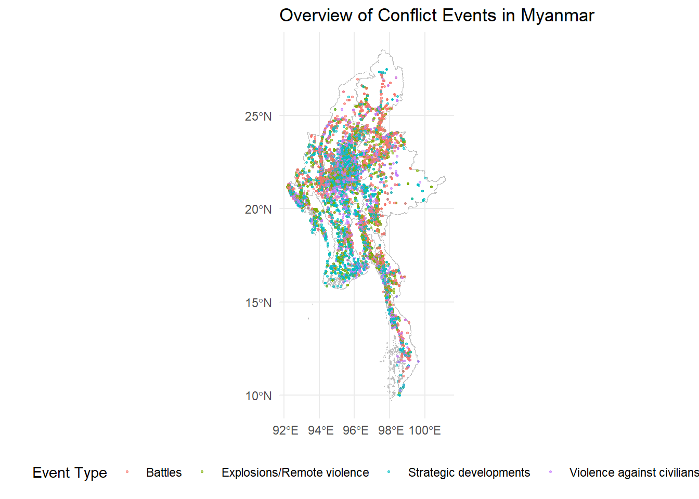
This map shows the distribution of conflict events across Myanmar. Each point represents an individual event, with colors indicating different types of events. Notice how events are not evenly distributed but tend to cluster in certain areas.
temporal_trendThis graph shows how the number of conflict events has changed over time. Notice how the conflict in Myanmar shows a distinct pattern of escalation and stabilization.
The conflict intensity gradually increased from the beginning of 2021 before reaching its apex in the third to fourth quarter of 2021. Following the peak, the conflict settled into a relatively consistent level of activity.
event_type_distevents_heatmapThe heatmap reveals areas of high conflict concentration. Brighter areas indicate ‘hotspots’ where many events have occurred. The conflict is not evenly distributed across Myanmar. *
Key hotspots include:
1. Northern/Central Regions: Sagaing, Magway, Mandalay, and Shan
2. Southern Region: Yangon
Possible reasons for these hotspots:
- Northern/Central Regions (Sagaing, Magway, Mandalay, and Shan):
- The area represents a critical juncture between the military-controlled central corridor and the resistance-held peripheral regions.
- Southern Region (Yangon):
- Yangon, as Myanmar’s largest city and former capital, is a crucial urban center with significant economic and political importance and is also a contested region.
admin_comparison
event_type_piesOur exploratory data analysis reveals clear patterns in the distribution of armed conflict across Myanmar from 2021 to 2024. The spatial distribution of fighting aligns closely with the geopolitical landscape of the country, particularly the contested areas where the Junta’s held territory intersects with regions controlled or influenced by rebel forces, as observed in the map by the Special Advisory Council for Myanmar above.
Key findings from our analysis include:
Concentration in Contested Regions: The majority of conflict events are clustered in areas where control is disputed between the Junta and rebel groups. This pattern underscores the strategic importance of these regions and the intensity of the struggle for territorial control.
Hotspots in Northern/Central Regions: The analysis identifies significant conflict activity in the following areas: Sagaing, Magway, Mandalay, and Shan.
Southern Conflict Center: Yangon also emerges as a notable area of conflict.
Relative Calm in Uncontested Areas: Regions that fall squarely within the undisputed territory of either the Junta or rebel groups show notably less conflict activity. This pattern aligns with the expectation that areas of clear control experience fewer armed confrontations.
First-order Spatial-Temporal Patterns Analysis: Understanding Conflict Trends in Myanmar
To further investigate the spatial and temporal dynamics of conflict events in Myanmar, we employed a First-order Spatial-Temporal Point Patterns Analysis. This method allows us to visualize and quantify the distribution of conflict events across space and time, revealing patterns that may not be apparent from raw event data alone.
Temporal Segmentation
Building upon our initial analysis, we segmented the conflict event data into quarterly periods from Q1 2021 to Q2 2024. This temporal resolution provides a balance between granularity and the ability to discern broader trends, allowing us to track the evolution of conflict patterns over the study period.
Handling Spatial Data Challenges (Duplicates)
A common challenge in spatial point pattern analysis is the occurrence of multiple events at identical coordinates, often due to limitations in spatial precision of reporting. To address this, we applied a jittering technique where each point was slightly displaced in a random direction.
Kernel Density Estimation (KDE)
For each quarter, we performed Kernel Density Estimation to visualize the spatial concentration of conflict events.
Standardization of Density Scales
To ensure meaningful comparison of conflict intensity across different quarters, we standardized the density scales. This standardization ensures that color intensities represent the same conflict density across all temporal segments, facilitating direct visual comparison.
Visualization
An animation was created to display the sequence of quarterly KDE maps, allowing for intuitive comprehension of temporal trends in conflict distribution.
This methodology enables us to:
Identify persistent conflict hotspots across the study period.
Detect emerging or dissipating areas of conflict.
Visualize the spatial evolution of conflict intensity over time.
Compare conflict patterns across different quarters on a standardized scale.
# Function to create KDE for a specific quarter
create_kde <- function(data, quarter, bw = NULL) {
quarter_data <- data %>% filter(quarter == !!quarter)
# Convert sf object to ppp object
window <- as.owin(st_bbox(adm0))
ppp_obj <- as.ppp(st_coordinates(quarter_data), W = window)
# Apply jittering to handle duplicated points
ppp_obj_jittered <- rjitter(ppp_obj, retry = TRUE, nsim = 1, drop = TRUE)
# Compute default bandwidth if not provided
if (is.null(bw)) {
bw <- bw.diggle(ppp_obj_jittered)
}
# Compute KDE
kde <- density.ppp(ppp_obj_jittered, sigma = bw.diggle, edge = TRUE)
# Convert to raster
r <- raster(kde)
# Mask the raster with Myanmar boundary
# Remove data outside of Myanmar.
r_masked <- mask(r, as(adm0, "Spatial"))
return(r_masked)
}
# Get unique quarters
quarters <- unique(conflict_data$quarter)
# Create KDE for each quarter
kde_layers <- lapply(quarters, function(q) {
tryCatch({
create_kde(conflict_data, q)
}, error = function(e) {
warning(paste("Error in quarter", q, ":", e$message))
return(NULL)
})
})
# Remove any NULL elements (quarters where KDE failed)
kde_layers <- kde_layers[!sapply(kde_layers, is.null)]
# Name the layers
names(kde_layers) <- quarters[!sapply(kde_layers, is.null)]
# Print summary of KDE layers
print(summary(kde_layers)) Length Class Mode
2024-Q2 16384 RasterLayer S4
2024-Q1 16384 RasterLayer S4
2023-Q4 16384 RasterLayer S4
2023-Q3 16384 RasterLayer S4
2023-Q2 16384 RasterLayer S4
2023-Q1 16384 RasterLayer S4
2022-Q4 16384 RasterLayer S4
2022-Q3 16384 RasterLayer S4
2022-Q2 16384 RasterLayer S4
2022-Q1 16384 RasterLayer S4
2021-Q4 16384 RasterLayer S4
2021-Q3 16384 RasterLayer S4
2021-Q2 16384 RasterLayer S4
2021-Q1 16384 RasterLayer S4 Visualization of the various KDE maps by quarter
# Function to get the lowest maximum density across all KDE layers
get_lowest_max_density <- function(kde_layers) {
max_densities <- sapply(kde_layers, function(layer) {
max(values(layer), na.rm = TRUE)
})
return(c(0, min(max_densities)))
}
# Get the density range with the lowest maximum
density_range <- get_lowest_max_density(kde_layers)
# Function to plot a single KDE layer with fixed density scale
plot_kde_layer <- function(kde_layer, quarter, admin_boundary, density_range) {
# Convert raster to data frame for ggplot
kde_df <- as.data.frame(kde_layer, xy = TRUE) %>%
rename(density = layer)
# Create the plot
ggplot() +
geom_raster(data = kde_df, aes(x = x, y = y, fill = density)) +
geom_sf(data = admin_boundary, fill = NA, color = "black") +
scale_fill_viridis_c(option = "plasma",
limits = density_range,
oob = scales::squish) +
labs(title = paste("KDE for", quarter),
x = "Longitude", y = "Latitude", fill = "Density") +
theme_minimal() +
coord_sf()
}
# Plot all KDE layers with fixed density scale
kde_plots <- lapply(seq_along(kde_layers), function(i) {
plot_kde_layer(kde_layers[[i]], names(kde_layers)[i], adm0, density_range)
})
# Display the plots
for (plot in kde_plots) {
print(plot)
}The maps above shows the “heat” of conflict events in Myanmar for a specific three-month period (quarter).
Red areas are “conflict hotspots” with many events close together.
The brighter the color, the more concentrated the conflict.
# Function to convert a single KDE layer to a data frame
kde_to_df <- function(kde_layer, quarter) {
df <- as.data.frame(kde_layer, xy = TRUE) %>%
rename(density = layer) %>%
mutate(quarter = quarter)
return(df)
}
# Convert all KDE layers to a single data frame
kde_df <- map2_dfr(kde_layers, names(kde_layers), kde_to_df)
# Create the base plot
p <- ggplot() +
geom_raster(data = kde_df, aes(x = x, y = y, fill = density)) +
geom_sf(data = adm0, fill = NA, color = "white", size = 0.5) +
scale_fill_viridis_c(option = "plasma",
limits = density_range,
oob = scales::squish) +
labs(title = "Conflict Density in Myanmar: {closest_state}",
x = "Longitude", y = "Latitude", fill = "Density") +
theme_minimal() +
theme(plot.title = element_text(size = 20, face = "bold"),
legend.position = "bottom") +
coord_sf()
# The following code creates the animation, render it and saves it as a gif. It will be commented out for brevity.
# Add animation
#animated_plot <- p +
# transition_states(quarter,
# transition_length = 2,
# state_length = 3) +
# ease_aes('cubic-in-out')
# Render the animation
#anim <- animate(animated_plot, nframes = 200, fps = 10, width = 800, height = 600, renderer = gifski_renderer())
# Save the animation
#anim_save("myanmar_conflict_density_slideshow_kde.gif", anim)Animation of the Conflict Density in Myanmar over Time
This animation shows how conflict hotspots evolved in Myanmar from early 2021 to mid-2024. Each frame represents a three-month period (quarter), with warmer colors (red and orange) indicating areas of high conflict concentration and cooler colors (blue and green) showing areas of lower conflict activity.
Key observations:
Central Concentration: Notice how the conflicts are consistently concentrated in the middle area of Myanmar throughout the entire period. This pattern supports our previous analysis and highlights the persistent nature of conflicts in this region.
Relative Calm in Peripheries: The peripheral areas, particularly the far north, far south and far east generally show lower conflict intensity.
Spatio-Temporal kernel density estimation
# Prepare data for STKDE
coords <- st_coordinates(conflict_data)
t <- as.numeric(conflict_data$event_date - min(conflict_data$event_date))
# Create observation window for the entire region
window_full <- as.owin(st_bbox(adm0))
# Create ppp object
ppp_full <- as.ppp(coords, W = window_full)
# Compute bandwidths
h_spatial <- bw.ppl(ppp_full)
h_temporal <- bw.SJ(t)
# Perform STKDE
stkde_result <- spattemp.density(ppp_full, t, tlim = range(t),
h = c(h_spatial, h_temporal))
# Print summary of STKDE result
print(summary(stkde_result))Spatiotemporal Kernel Density Estimate
Bandwidths
h = 0.022 (spatial)
lambda = 13.2077 (temporal)
No. of observations
42608
Spatial bound
Type: rectangle
2D enclosure: [92.1721, 101.17] x [9.696844, 28.54554]
Temporal bound
[0, 1276]
Evaluation
128 x 128 x 1277 trivariate lattice
Density range: [0, 0.006236424]
NULLSecond-order Spatial-Temporal Patterns Analysis
The second-order spatial-temporal patterns analysis concentrates on a select group of key regions, strategically chosen to provide in-depth insights into the most critical areas of conflict, namely Sagaing, Magway, Mandalay,Yangon.
# Define the regions of interest
regions_of_interest <- c("Sagaing", "Magway", "Mandalay","Yangon")
# Extract the specified regions from adm1
study_area <- adm1 %>%
filter(ST %in% regions_of_interest)
# Print summary of the study area
print(summary(study_area)) OBJECTID ST ST_PCODE ST_RG
Min. : 8.00 Length:4 Length:4 Length:4
1st Qu.: 8.75 Class :character Class :character Class :character
Median :11.00 Mode :character Mode :character Mode :character
Mean :12.00
3rd Qu.:14.25
Max. :18.00
ST_MMR PCode_V geometry
Length:4 Min. :9.4 MULTIPOLYGON :4
Class :character 1st Qu.:9.4 epsg:4326 :0
Mode :character Median :9.4 +proj=long...:0
Mean :9.4
3rd Qu.:9.4
Max. :9.4 # Plot the study area to visualize it
ggplot() +
geom_sf(data = adm1, fill = "lightgrey", color = "white") +
geom_sf(data = study_area, aes(fill = ST), alpha = 0.7) +
theme_minimal() +
labs(title = "Study Area: Selected Regions in Myanmar",
fill = "Region") +
theme(legend.position = "bottom")Central Regions Analysis
Sagaing
G-Function
# Extract Sagaing region
sagaing <- adm1 %>%
filter(ST == "Sagaing")
# Print basic information about Sagaing
print(sagaing)Simple feature collection with 1 feature and 6 fields
Geometry type: MULTIPOLYGON
Dimension: XY
Bounding box: xmin: 93.94619 ymin: 21.57596 xmax: 97.0669 ymax: 27.37205
Geodetic CRS: WGS 84
OBJECTID ST ST_PCODE ST_RG ST_MMR PCode_V
1 13 Sagaing MMR005 Region စစ်ကိုင်းတိုင်းဒေသကြီး 9.4
geometry
1 MULTIPOLYGON (((96.72824 27...# Plot Sagaing to visualize it
ggplot() +
geom_sf(data = adm1, fill = "lightgrey", color = "white") +
geom_sf(data = sagaing, fill = "red", alpha = 0.7) +
theme_minimal() +
labs(title = "Sagaing Region in Myanmar")
# Filter conflict data for Sagaing and jitter the coordinates
conflict_sagaing <- conflict_data %>%
st_join(sagaing) %>%
filter(!is.na(ST)) %>%
st_jitter() # Small jitter amount, adjust if needed
# Create observation window for Sagaing
window_sagaing <- as.owin(st_bbox(sagaing))
# Convert jittered conflict points to ppp object
conflict_ppp_sagaing <- as.ppp(st_coordinates(conflict_sagaing), W = window_sagaing)
# Compute G-function estimation
g_est_sagaing <- Gest(conflict_ppp_sagaing, correction = "border")
# Plot the G-function
plot(g_est_sagaing, main = "G-function for Conflict Events in Sagaing")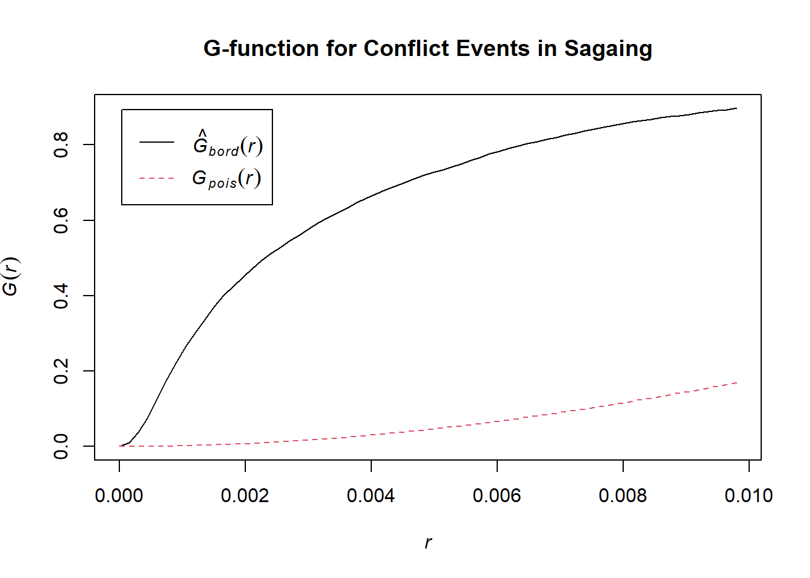
# Print summary of G-function estimation
summary(g_est_sagaing) r theo rs
Min. :0.00000 Min. :0.0000 Min. :0.0000
1st Qu.:0.01929 1st Qu.:0.5130 1st Qu.:0.9782
Median :0.03859 Median :0.9438 Median :0.9945
Mean :0.03859 Mean :0.7383 Mean :0.9432
3rd Qu.:0.05788 3rd Qu.:0.9985 3rd Qu.:0.9969
Max. :0.07718 Max. :1.0000 Max. :0.9977 This G-function plot provides strong evidence that conflict events in Sagaing are not randomly distributed but are instead highly clustered, particularly at very short distances. This could suggest that conflicts tend to occur in specific hotspots or that one conflict event might trigger others in very close proximity.
# Perform Monte Carlo test
G_sagaing_env <- envelope(conflict_ppp_sagaing, fun = Gest, nsim = 999, rank = 1, global = TRUE)Generating 999 simulations of CSR ...
1, 2, 3, ......10.........20.........30.........40.........50.........60..
.......70.........80.........90.........100.........110.........120.........130
.........140.........150.........160.........170.........180.........190........
.200.........210.........220.........230.........240.........250.........260......
...270.........280.........290.........300.........310.........320.........330....
.....340.........350.........360.........370.........380.........390.........400..
.......410.........420.........430.........440.........450.........460.........470
.........480.........490.........500.........510.........520.........530........
.540.........550.........560.........570.........580.........590.........600......
...610.........620.........630.........640.........650.........660.........670....
.....680.........690.........700.........710.........720.........730.........740..
.......750.........760.........770.........780.........790.........800.........810
.........820.........830.........840.........850.........860.........870........
.880.........890.........900.........910.........920.........930.........940......
...950.........960.........970.........980.........990........
999.
Done.# Plot the results
plot(G_sagaing_env, main = "Monte Carlo Test: G-function for Conflict Events in Sagaing")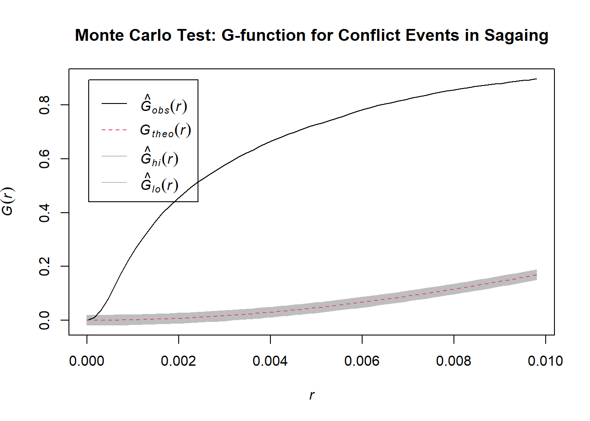
# Print the results of the test
print(G_sagaing_env)Simultaneous critical envelopes for G(r)
and observed value for 'conflict_ppp_sagaing'
Edge correction: "km"
Obtained from 999 simulations of CSR
Envelope based on maximum deviation of G(r) from null value for CSR (known
exactly)
Alternative: two.sided
Significance level of simultaneous Monte Carlo test: 1/1000 = 0.001
...........................................................
Math.label Description
r r distance argument r
obs hat(G)[obs](r) observed value of G(r) for data pattern
theo G[theo](r) theoretical value of G(r) for CSR
lo hat(G)[lo](r) lower critical boundary for G(r)
hi hat(G)[hi](r) upper critical boundary for G(r)
...........................................................
Default plot formula: .~r
where "." stands for 'obs', 'theo', 'hi', 'lo'
Columns 'lo' and 'hi' will be plotted as shading (by default)
Recommended range of argument r: [0, 0.0097982]
Available range of argument r: [0, 0.0097982]This Monte Carlo test provides strong evidence that conflict events in Sagaing are significantly more clustered than would be expected by chance, particularly at shorter distances.
L-Function
# Calculate L-function
L_sagaing <- Lest(conflict_ppp_sagaing, correction = "Ripley")
# Plot L-function
plot(L_sagaing, . - r ~ r, main = "L-function for Conflict Events in Sagaing")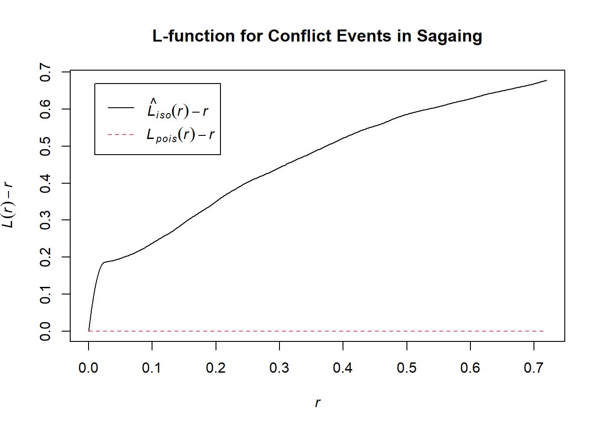
This L-function analysis strongly supports the conclusion that conflict events in Sagaing are significantly clustered, with the clustering being particularly intense at shorter distances but persisting across larger scales as well. This pattern deviates markedly from what would be expected if the events were randomly distributed.
# Perform Monte Carlo test with L-function
L_sagaing_env <- envelope(conflict_ppp_sagaing, fun = Lest, nsim = 999, rank = 1, global = TRUE)Generating 999 simulations of CSR ...
1, 2, 3, ......10 [4:53 remaining] .........20 [4:52 remaining] ...
......30 [4:46 remaining] .........40 [4:40 remaining] .........50 [4:36 remaining] ..
.......60 [4:45 remaining] .........70 [4:40 remaining] .........80 [4:40 remaining] .
........90 [4:37 remaining] .........100 [4:34 remaining] .........110
[4:29 remaining] .........120 [4:27 remaining] .........130 [4:23 remaining] .........
140 [4:19 remaining] .........150 [4:16 remaining] .........160 [4:13 remaining] ........
.170 [4:10 remaining] .........180 [4:08 remaining] .........190 [4:05 remaining] .......
..200 [4:01 remaining] .........210 [3:58 remaining] .........220 [3:55 remaining] ......
...230 [3:51 remaining] .........240 [3:47 remaining] .........250 [3:44 remaining] .....
....260 [3:40 remaining] .........270 [3:37 remaining] .........280 [3:34 remaining] ....
.....290 [3:31 remaining] .........300 [3:28 remaining] .........310 [3:25 remaining] ...
......320 [3:22 remaining] .........330 [3:19 remaining] .........340 [3:16 remaining] ..
.......350 [3:13 remaining] .........360 [3:09 remaining] .........370 [3:06 remaining] .
........380 [3:03 remaining] .........390 [3:00 remaining] .........400
[2:57 remaining] .........410 [2:54 remaining] .........420 [2:51 remaining] .........
430 [2:48 remaining] .........440 [2:45 remaining] .........450 [2:42 remaining] ........
.460 [2:38 remaining] .........470 [2:35 remaining] .........480 [2:32 remaining] .......
..490 [2:29 remaining] .........500 [2:26 remaining] .........510 [2:23 remaining] ......
...520 [2:20 remaining] .........530 [2:17 remaining] .........540 [2:14 remaining] .....
....550 [2:11 remaining] .........560 [2:08 remaining] .........570 [2:05 remaining] ....
.....580 [2:02 remaining] .........590 [1:59 remaining] .........600 [1:56 remaining] ...
......610 [1:53 remaining] .........620 [1:51 remaining] .........630 [1:48 remaining] ..
.......640 [1:45 remaining] .........650 [1:42 remaining] .........660 [1:39 remaining] .
........670 [1:36 remaining] .........680 [1:33 remaining] .........690
[1:30 remaining] .........700 [1:27 remaining] .........710 [1:24 remaining] .........
720 [1:21 remaining] .........730 [1:18 remaining] .........740 [1:15 remaining] ........
.750 [1:12 remaining] .........760 [1:09 remaining] .........770 [1:06 remaining] .......
..780 [1:04 remaining] .........790 [1:01 remaining] .........800 [58 sec remaining] ......
...810 [55 sec remaining] .........820 [52 sec remaining] .........830 [49 sec remaining] .....
....840 [46 sec remaining] .........850 [43 sec remaining] .........860 [40 sec remaining] ....
.....870 [37 sec remaining] .........880 [34 sec remaining] .........890 [32 sec remaining] ...
......900 [29 sec remaining] .........910 [26 sec remaining] .........920 [23 sec remaining] ..
.......930 [20 sec remaining] .........940 [17 sec remaining] .........950 [14 sec remaining] .
........960 [11 sec remaining] .........970 [8 sec remaining] .........980
[5 sec remaining] .........990 [3 sec remaining] ........
999.
Done.# Plot Monte Carlo test results
plot(L_sagaing_env, . - r ~ r, main = "Monte Carlo Test: L-function for Conflict Events in Sagaing")# Print the results of the test
print(L_sagaing_env)Simultaneous critical envelopes for L(r)
and observed value for 'conflict_ppp_sagaing'
Edge correction: "iso"
Obtained from 999 simulations of CSR
Envelope based on maximum deviation of L(r) from null value for CSR (known
exactly)
Alternative: two.sided
Significance level of simultaneous Monte Carlo test: 1/1000 = 0.001
...........................................................
Math.label Description
r r distance argument r
obs hat(L)[obs](r) observed value of L(r) for data pattern
theo L[theo](r) theoretical value of L(r) for CSR
lo hat(L)[lo](r) lower critical boundary for L(r)
hi hat(L)[hi](r) upper critical boundary for L(r)
...........................................................
Default plot formula: .~r
where "." stands for 'obs', 'theo', 'hi', 'lo'
Columns 'lo' and 'hi' will be plotted as shading (by default)
Recommended range of argument r: [0, 0.7193]
Available range of argument r: [0, 0.7193]L-Function over time
To maintain brevity and avoid overwhelming the report with excessive imagery, the code segment demonstrating the temporal evolution of the L-Function has been set to eval:false. This setting suppresses the generation and display of multiple images in the final report.
# Extract Sagaing region
sagaing <- adm1 %>%
filter(ST == "Sagaing")
# Filter conflict data for Sagaing and jitter the coordinates
conflict_sagaing <- conflict_data %>%
st_join(sagaing) %>%
filter(!is.na(ST)) %>%
st_jitter()
# Create observation window for Sagaing
window_sagaing <- as.owin(st_bbox(sagaing))
# Function to analyze a single quarter
analyze_quarter <- function(data, quarter) {
conflict_ppp <- as.ppp(st_coordinates(data), W = window_sagaing)
tryCatch({
g_est <- Gest(conflict_ppp, correction = "border")
l_est <- Lest(conflict_ppp, correction = "Ripley")
g_plot <- plot(g_est, main = paste("G-function for Sagaing -", quarter))
l_plot <- plot(l_est, . - r ~ r, main = paste("L-function for Sagaing -", quarter))
return(list(g_plot = g_plot, l_plot = l_plot, message = NULL))
}, error = function(e) {
print(paste("Lack of entry within the time period:", quarter))
})
}
# Perform analysis for each quarter
quarterly_results <- conflict_sagaing %>%
group_by(quarter) %>%
group_map(~ analyze_quarter(.x, .y$quarter))Spatio-Temporal kernel density estimation
# Extract Sagaing region
sagaing <- adm1 %>%
filter(ST == "Sagaing")
# Filter conflict data for Sagaing and jitter the coordinates
conflict_sagaing <- conflict_data %>%
st_join(sagaing) %>%
filter(!is.na(ST)) %>%
st_jitter()
# Create observation window for Sagaing
window_sagaing <- as.owin(st_bbox(sagaing))
# Prepare data for STKDE
coords <- st_coordinates(conflict_sagaing)
t <- as.numeric(conflict_sagaing$event_date - min(conflict_sagaing$event_date))
# Create ppp object
ppp_sagaing <- as.ppp(coords, W = window_sagaing)
# Compute bandwidths
h_spatial <- bw.ppl(ppp_sagaing)
h_temporal <- bw.SJ(t)
# Perform STKDE
stkde_result <- spattemp.density(ppp_sagaing, t, tlim = range(t),
h = c(h_spatial, h_temporal))
# Commented out the plotting to save space.
# Plot STKDE result
# plot(stkde_result, main = "STKDE for Sagaing Region")
# Extract and plot time slices
#times <- seq(min(t), max(t), length.out = 5)
#par(mfrow = c(2, 3), mar = c(2, 2, 2, 2))
#for(time in times) {
# slice <- cut(stkde_result, t = time)
# plot(slice, main = paste("STKDE at time", round(time, 2)))
#}
# Print summary of STKDE result
print(summary(stkde_result))Spatiotemporal Kernel Density Estimate
Bandwidths
h = 0.0451 (spatial)
lambda = 21.4746 (temporal)
No. of observations
11128
Spatial bound
Type: rectangle
2D enclosure: [93.94619, 97.0669] x [21.57596, 27.37205]
Temporal bound
[0, 1264]
Evaluation
128 x 128 x 1265 trivariate lattice
Density range: [0, 0.006836297]
NULLThe spatiotemporal analysis of conflict events in Sagaing reveals a highly clustered pattern of violence, both in space and time.
Over a period of about 3.5 years, 11,128 conflict events were recorded within a specific geographic area, averaging nearly 9 incidents per day.
Statistical tests, including G-function and L-function analyses, consistently demonstrate that this clustering is significantly more pronounced than would be expected from random distribution, with particularly intense clustering at shorter distances but persisting across larger scales.
Mandalay
# Extract Mandalay region
Mandalay <- adm1 %>%
filter(ST == "Mandalay")
# Print basic information about Mandalay
print(Mandalay)Simple feature collection with 1 feature and 6 fields
Geometry type: MULTIPOLYGON
Dimension: XY
Bounding box: xmin: 94.82973 ymin: 20.19307 xmax: 96.89598 ymax: 23.68381
Geodetic CRS: WGS 84
OBJECTID ST ST_PCODE ST_RG ST_MMR PCode_V
1 9 Mandalay MMR010 Region မန္တလေးတိုင်းဒေသကြီး 9.4
geometry
1 MULTIPOLYGON (((96.14023 23...# Plot Mandalay to visualize it
ggplot() +
geom_sf(data = adm1, fill = "lightgrey", color = "white") +
geom_sf(data = Mandalay, fill = "red", alpha = 0.7) +
theme_minimal() +
labs(title = "Mandalay Region in Myanmar")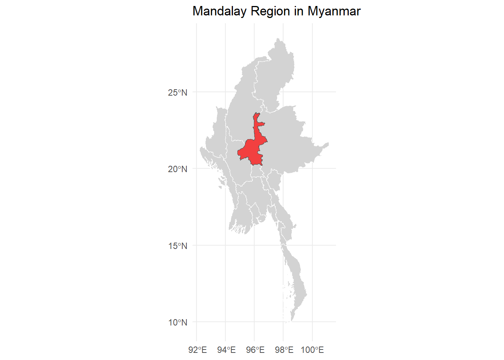
G-Function
# Filter conflict data for Mandalay and jitter the coordinates
conflict_Mandalay <- conflict_data %>%
st_join(Mandalay) %>%
filter(!is.na(ST)) %>%
st_jitter() # Small jitter amount, adjust if needed
# Create observation window for Mandalay
window_Mandalay <- as.owin(st_bbox(Mandalay))
# Convert jittered conflict points to ppp object
conflict_ppp_Mandalay <- as.ppp(st_coordinates(conflict_Mandalay), W = window_Mandalay)
# Compute G-function estimation
g_est_Mandalay <- Gest(conflict_ppp_Mandalay, correction = "border")
# Plot the G-function
plot(g_est_Mandalay, main = "G-function for Conflict Events in Mandalay")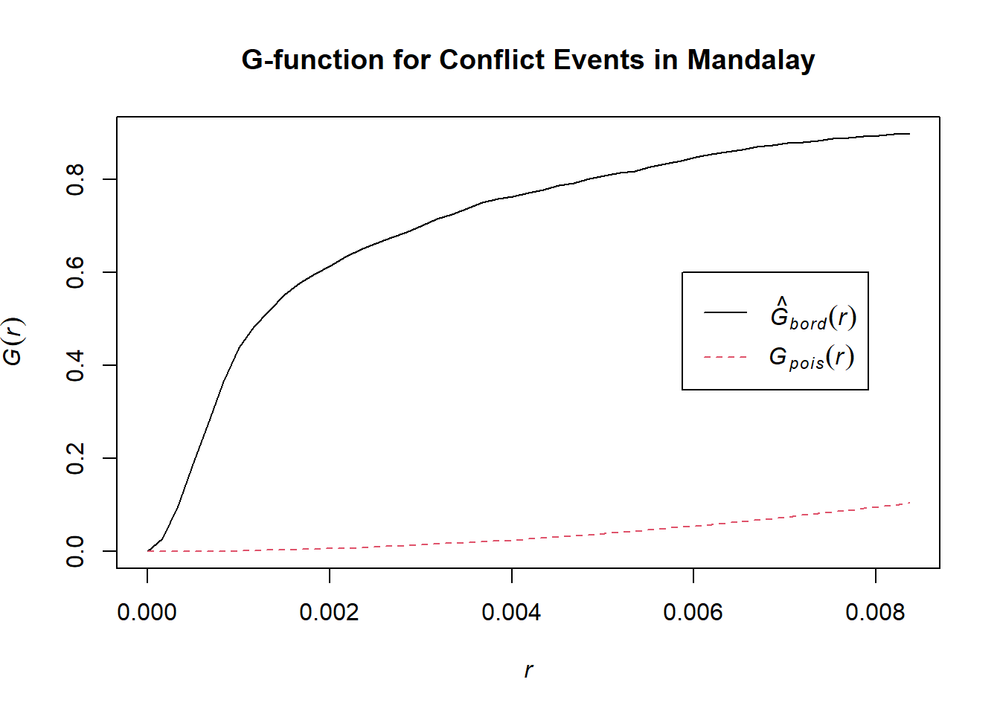
# Print summary of G-function estimation
summary(g_est_Mandalay) r theo rs
Min. :0.00000 Min. :0.0000 Min. :0.0000
1st Qu.:0.02141 1st Qu.:0.5130 1st Qu.:0.9650
Median :0.04283 Median :0.9438 Median :0.9894
Mean :0.04283 Mean :0.7383 Mean :0.9525
3rd Qu.:0.06424 3rd Qu.:0.9985 3rd Qu.:0.9944
Max. :0.08565 Max. :1.0000 Max. :0.9972 # Perform Monte Carlo test
G_Mandalay_env <- envelope(conflict_ppp_Mandalay, fun = Gest, nsim = 999, rank = 1, global = TRUE)Generating 999 simulations of CSR ...
1, 2, 3, ......10.........20.........30.........40.........50.........60..
.......70.........80.........90.........100.........110.........120.........130
.........140.........150.........160.........170.........180.........190........
.200.........210.........220.........230.........240.........250.........260......
...270.........280.........290.........300.........310.........320.........330....
.....340.........350.........360.........370.........380.........390.........400..
.......410.........420.........430.........440.........450.........460.........470
.........480.........490.........500.........510.........520.........530........
.540.........550.........560.........570.........580.........590.........600......
...610.........620.........630.........640.........650.........660.........670....
.....680.........690.........700.........710.........720.........730.........740..
.......750.........760.........770.........780.........790.........800.........810
.........820.........830.........840.........850.........860.........870........
.880.........890.........900.........910.........920.........930.........940......
...950.........960.........970.........980.........990........
999.
Done.# Plot the results
plot(G_Mandalay_env, main = "Monte Carlo Test: G-function for Conflict Events in Mandalay")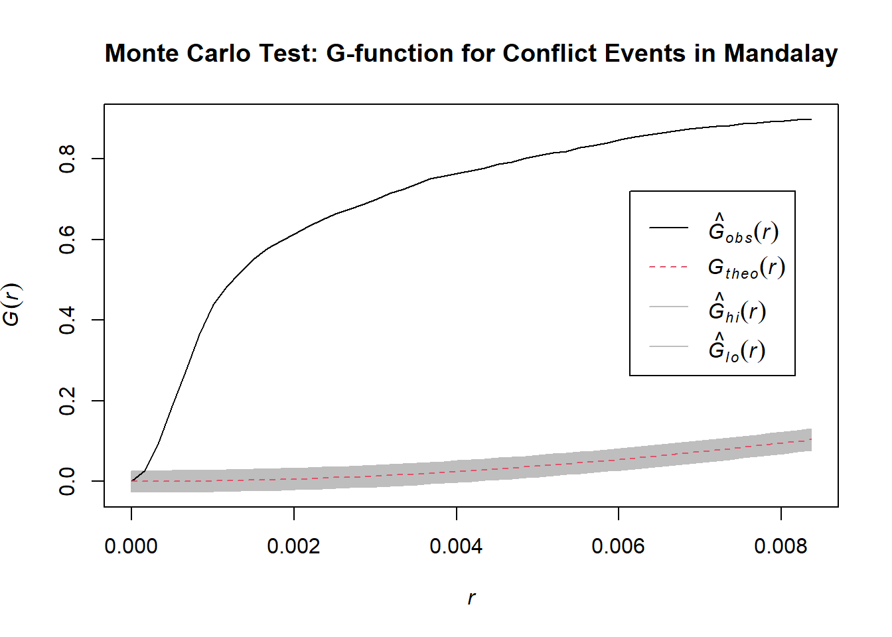
# Print the results of the test
print(G_Mandalay_env)Simultaneous critical envelopes for G(r)
and observed value for 'conflict_ppp_Mandalay'
Edge correction: "km"
Obtained from 999 simulations of CSR
Envelope based on maximum deviation of G(r) from null value for CSR (known
exactly)
Alternative: two.sided
Significance level of simultaneous Monte Carlo test: 1/1000 = 0.001
...........................................................
Math.label Description
r r distance argument r
obs hat(G)[obs](r) observed value of G(r) for data pattern
theo G[theo](r) theoretical value of G(r) for CSR
lo hat(G)[lo](r) lower critical boundary for G(r)
hi hat(G)[hi](r) upper critical boundary for G(r)
...........................................................
Default plot formula: .~r
where "." stands for 'obs', 'theo', 'hi', 'lo'
Columns 'lo' and 'hi' will be plotted as shading (by default)
Recommended range of argument r: [0, 0.0083644]
Available range of argument r: [0, 0.0083644]L-Function
# Calculate L-function
L_Mandalay <- Lest(conflict_ppp_Mandalay, correction = "Ripley")
# Plot L-function
plot(L_Mandalay, . - r ~ r, main = "L-function for Conflict Events in Mandalay")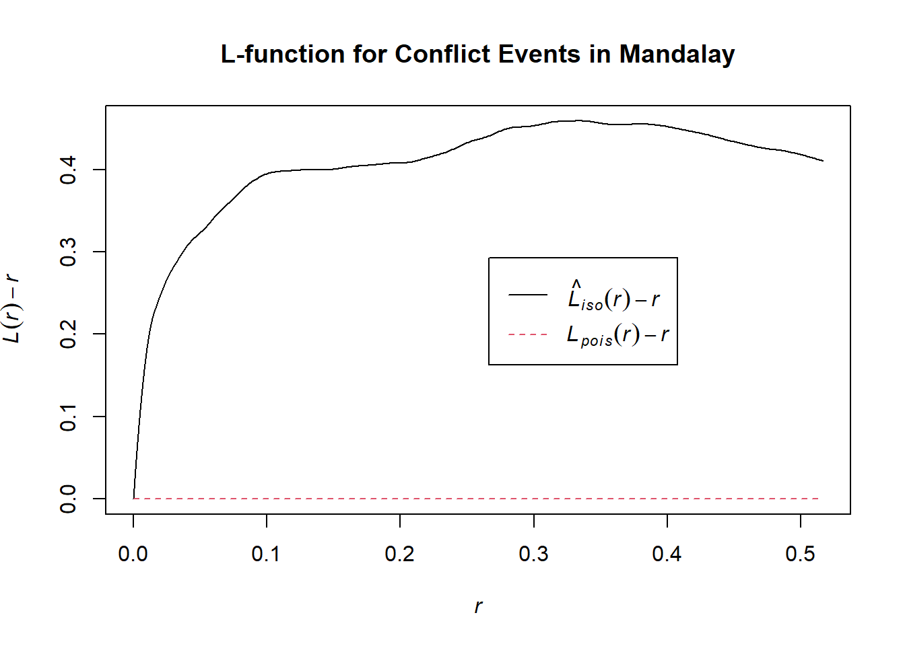
# Perform Monte Carlo test with L-function
L_Mandalay_env <- envelope(conflict_ppp_Mandalay, fun = Lest, nsim = 999, rank = 1, global = TRUE)Generating 999 simulations of CSR ...
1, 2, 3, ......10.........20.........30.........40.........50.........60..
.......70.........80.........90.........100.........110.........120.........130
.........140.........150.........160.........170.........180.........190........
.200.........210.........220.........230.........240.........250.........260......
...270.........280.........290.........300.........310.........320.........330....
.....340.........350.........360.........370.........380.........390.........400..
.......410.........420.........430.........440.........450.........460.........470
.........480.........490.........500.........510.........520.........530........
.540.........550.........560.........570.........580.........590.........600......
...610.........620.........630.........640.........650.........660.........670....
.....680.........690.........700.........710.........720.........730.........740..
.......750.........760.........770.........780.........790.........800.........810
.........820.........830.........840.........850.........860.........870........
.880.........890.........900.........910.........920.........930.........940......
...950.........960.........970.........980.........990........
999.
Done.# Plot Monte Carlo test results
plot(L_Mandalay_env, . - r ~ r, main = "Monte Carlo Test: L-function for Conflict Events in Mandalay")# Print the results of the test
print(L_Mandalay_env)Simultaneous critical envelopes for L(r)
and observed value for 'conflict_ppp_Mandalay'
Edge correction: "iso"
Obtained from 999 simulations of CSR
Envelope based on maximum deviation of L(r) from null value for CSR (known
exactly)
Alternative: two.sided
Significance level of simultaneous Monte Carlo test: 1/1000 = 0.001
...........................................................
Math.label Description
r r distance argument r
obs hat(L)[obs](r) observed value of L(r) for data pattern
theo L[theo](r) theoretical value of L(r) for CSR
lo hat(L)[lo](r) lower critical boundary for L(r)
hi hat(L)[hi](r) upper critical boundary for L(r)
...........................................................
Default plot formula: .~r
where "." stands for 'obs', 'theo', 'hi', 'lo'
Columns 'lo' and 'hi' will be plotted as shading (by default)
Recommended range of argument r: [0, 0.51656]
Available range of argument r: [0, 0.51656]L-Function over time
Set to eval:false
# Extract Mandalay region
mandalay <- adm1 %>%
filter(ST == "Mandalay")
# Filter conflict data for Mandalay and jitter the coordinates
conflict_mandalay <- conflict_data %>%
st_join(mandalay) %>%
filter(!is.na(ST)) %>%
st_jitter()
# Create observation window for Mandalay
window_mandalay <- as.owin(st_bbox(mandalay))
# Function to analyze a single quarter
analyze_quarter <- function(data, quarter) {
conflict_ppp <- as.ppp(st_coordinates(data), W = window_mandalay)
tryCatch({
g_est <- Gest(conflict_ppp, correction = "border")
l_est <- Lest(conflict_ppp, correction = "Ripley")
g_plot <- plot(g_est, main = paste("G-function for Mandalay -", quarter))
l_plot <- plot(l_est, . - r ~ r, main = paste("L-function for Mandalay -", quarter))
return(list(g_plot = g_plot, l_plot = l_plot, message = NULL))
}, error = function(e) {
print(paste("Lack of entry within the time period:", quarter))
})
}
# Perform analysis for each quarter
quarterly_results <- conflict_mandalay %>%
group_by(quarter) %>%
group_map(~ analyze_quarter(.x, .y$quarter))Spatio-Temporal kernel density estimation
# Mandalay Region
mandalay <- adm1 %>%
filter(ST == "Mandalay")
# Filter conflict data for Mandalay and jitter the coordinates
conflict_mandalay <- conflict_data %>%
st_join(mandalay) %>%
filter(!is.na(ST)) %>%
st_jitter()
# Create observation window for Mandalay
window_mandalay <- as.owin(st_bbox(mandalay))
# Prepare data for STKDE
coords <- st_coordinates(conflict_mandalay)
t <- as.numeric(conflict_mandalay$event_date - min(conflict_mandalay$event_date))
# Create ppp object
ppp_mandalay <- as.ppp(coords, W = window_mandalay)
# Compute bandwidths
h_spatial <- bw.ppl(ppp_mandalay)
h_temporal <- bw.SJ(t)
# Perform STKDE
stkde_result <- spattemp.density(ppp_mandalay, t, tlim = range(t),
h = c(h_spatial, h_temporal))
# Print summary of STKDE result
print(summary(stkde_result))Spatiotemporal Kernel Density Estimate
Bandwidths
h = 0.0075 (spatial)
lambda = 26.5057 (temporal)
No. of observations
3603
Spatial bound
Type: rectangle
2D enclosure: [94.82973, 96.89598] x [20.19307, 23.68381]
Temporal bound
[0, 1264]
Evaluation
128 x 128 x 1265 trivariate lattice
Density range: [0, 0.2306234]
NULLThe analysis of conflict events in Mandalay reveals a significant pattern of spatial and temporal clustering. Over a period of approximately 3.5 years, 3,603 conflict events were recorded within a defined geographic area, averaging about 2.85 incidents per day.
Both the G-function and L-function analyses consistently demonstrate that this clustering is substantially more pronounced than would be expected from a random distribution, with particularly intense clustering at shorter distances but persisting across larger scales.
The spatiotemporal kernel density estimation further indicates the presence of specific hotspots within the region, with a wide density range suggesting significant variation in conflict concentration.
Magway
# Extract Magway region
Magway <- adm1 %>%
filter(ST == "Magway")
# Print basic information about Magway
print(Magway)Simple feature collection with 1 feature and 6 fields
Geometry type: MULTIPOLYGON
Dimension: XY
Bounding box: xmin: 93.84551 ymin: 18.83204 xmax: 95.85919 ymax: 22.77128
Geodetic CRS: WGS 84
OBJECTID ST ST_PCODE ST_RG ST_MMR PCode_V
1 8 Magway MMR009 Region မကွေးတိုင်းဒေသကြီး 9.4
geometry
1 MULTIPOLYGON (((94.11699 22...# Plot Magway to visualize it
ggplot() +
geom_sf(data = adm1, fill = "lightgrey", color = "white") +
geom_sf(data = Magway, fill = "red", alpha = 0.7) +
theme_minimal() +
labs(title = "Magway Region in Myanmar")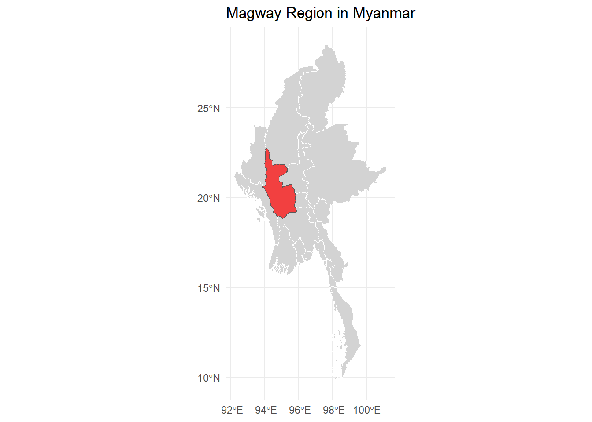
G-Function
# Filter conflict data for Magway and jitter the coordinates
conflict_Magway <- conflict_data %>%
st_join(Magway) %>%
filter(!is.na(ST)) %>%
st_jitter() # Small jitter amount, adjust if needed
# Create observation window for Magway
window_Magway <- as.owin(st_bbox(Magway))
# Convert jittered conflict points to ppp object
conflict_ppp_Magway <- as.ppp(st_coordinates(conflict_Magway), W = window_Magway)
# Compute G-function estimation
g_est_Magway <- Gest(conflict_ppp_Magway, correction = "border")
# Plot the G-function
plot(g_est_Magway, main = "G-function for Conflict Events in Magway")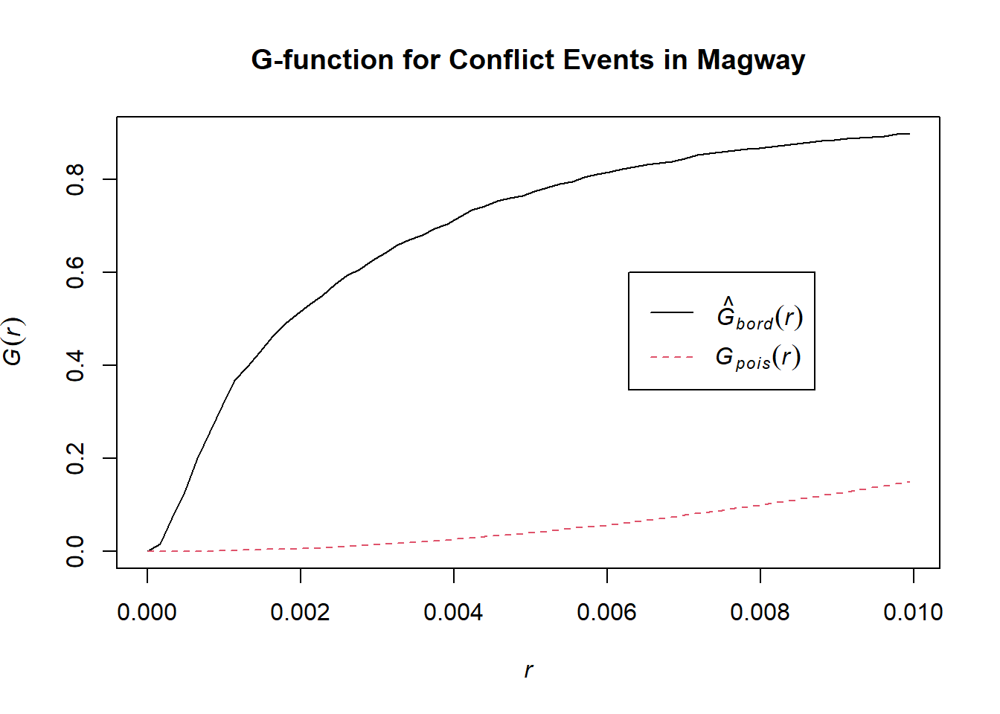
# Print summary of G-function estimation
summary(g_est_Magway) r theo rs
Min. :0.00000 Min. :0.0000 Min. :0.0000
1st Qu.:0.02085 1st Qu.:0.5130 1st Qu.:0.9526
Median :0.04170 Median :0.9438 Median :0.9801
Mean :0.04170 Mean :0.7383 Mean :0.9399
3rd Qu.:0.06255 3rd Qu.:0.9985 3rd Qu.:0.9899
Max. :0.08340 Max. :1.0000 Max. :0.9966 # Perform Monte Carlo test
G_Magway_env <- envelope(conflict_ppp_Magway, fun = Gest, nsim = 999, rank = 1, global = TRUE)Generating 999 simulations of CSR ...
1, 2, 3, ......10.........20.........30.........40.........50.........60..
.......70.........80.........90.........100.........110.........120.........130
.........140.........150.........160.........170.........180.........190........
.200.........210.........220.........230.........240.........250.........260......
...270.........280.........290.........300.........310.........320.........330....
.....340.........350.........360.........370.........380.........390.........400..
.......410.........420.........430.........440.........450.........460.........470
.........480.........490.........500.........510.........520.........530........
.540.........550.........560.........570.........580.........590.........600......
...610.........620.........630.........640.........650.........660.........670....
.....680.........690.........700.........710.........720.........730.........740..
.......750.........760.........770.........780.........790.........800.........810
.........820.........830.........840.........850.........860.........870........
.880.........890.........900.........910.........920.........930.........940......
...950.........960.........970.........980.........990........
999.
Done.# Plot the results
plot(G_Magway_env, main = "Monte Carlo Test: G-function for Conflict Events in Magway")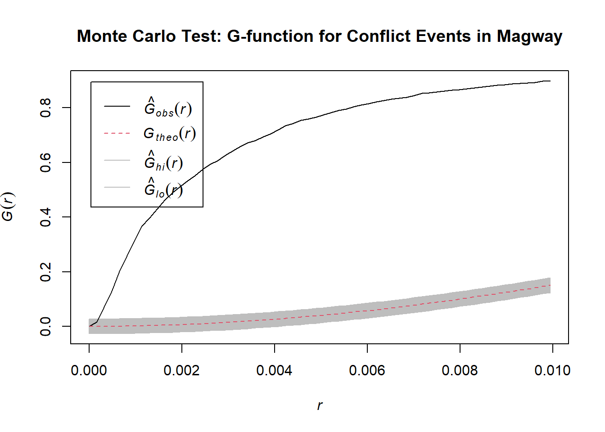
# Print the results of the test
print(G_Magway_env)Simultaneous critical envelopes for G(r)
and observed value for 'conflict_ppp_Magway'
Edge correction: "km"
Obtained from 999 simulations of CSR
Envelope based on maximum deviation of G(r) from null value for CSR (known
exactly)
Alternative: two.sided
Significance level of simultaneous Monte Carlo test: 1/1000 = 0.001
...........................................................
Math.label Description
r r distance argument r
obs hat(G)[obs](r) observed value of G(r) for data pattern
theo G[theo](r) theoretical value of G(r) for CSR
lo hat(G)[lo](r) lower critical boundary for G(r)
hi hat(G)[hi](r) upper critical boundary for G(r)
...........................................................
Default plot formula: .~r
where "." stands for 'obs', 'theo', 'hi', 'lo'
Columns 'lo' and 'hi' will be plotted as shading (by default)
Recommended range of argument r: [0, 0.0099367]
Available range of argument r: [0, 0.0099367]L-Function
# Calculate L-function
L_Magway <- Lest(conflict_ppp_Magway, correction = "Ripley")
# Plot L-function
plot(L_Magway, . - r ~ r, main = "L-function for Conflict Events in Magway")# Perform Monte Carlo test with L-function
L_Magway_env <- envelope(conflict_ppp_Magway, fun = Lest, nsim = 999, rank = 1, global = TRUE)Generating 999 simulations of CSR ...
1, 2, 3, ......10.........20.........30.........40.........50.........60..
.......70.........80.........90.........100.........110.........120.........130
.........140.........150.........160.........170.........180.........190........
.200.........210.........220.........230.........240.........250.........260......
...270.........280.........290.........300.........310.........320.........330....
.....340.........350.........360.........370.........380.........390.........400..
.......410.........420.........430.........440.........450.........460.........470
.........480.........490.........500.........510.........520.........530........
.540.........550.........560.........570.........580.........590.........600......
...610.........620.........630.........640.........650.........660.........670....
.....680.........690.........700.........710.........720.........730.........740..
.......750.........760.........770.........780.........790.........800.........810
.........820.........830.........840.........850.........860.........870........
.880.........890.........900.........910.........920.........930.........940......
...950.........960.........970.........980.........990........
999.
Done.# Plot Monte Carlo test results
plot(L_Magway_env, . - r ~ r, main = "Monte Carlo Test: L-function for Conflict Events in Magway")# Print the results of the test
print(L_Magway_env)Simultaneous critical envelopes for L(r)
and observed value for 'conflict_ppp_Magway'
Edge correction: "iso"
Obtained from 999 simulations of CSR
Envelope based on maximum deviation of L(r) from null value for CSR (known
exactly)
Alternative: two.sided
Significance level of simultaneous Monte Carlo test: 1/1000 = 0.001
...........................................................
Math.label Description
r r distance argument r
obs hat(L)[obs](r) observed value of L(r) for data pattern
theo L[theo](r) theoretical value of L(r) for CSR
lo hat(L)[lo](r) lower critical boundary for L(r)
hi hat(L)[hi](r) upper critical boundary for L(r)
...........................................................
Default plot formula: .~r
where "." stands for 'obs', 'theo', 'hi', 'lo'
Columns 'lo' and 'hi' will be plotted as shading (by default)
Recommended range of argument r: [0, 0.50342]
Available range of argument r: [0, 0.50342]L-Function over time
Set eval:false
# Extract Magway region
magway <- adm1 %>%
filter(ST == "Magway")
# Filter conflict data for Magway and jitter the coordinates
conflict_magway <- conflict_data %>%
st_join(magway) %>%
filter(!is.na(ST)) %>%
st_jitter()
# Create observation window for Magway
window_magway <- as.owin(st_bbox(magway))
# Function to analyze a single quarter
analyze_quarter <- function(data, quarter) {
conflict_ppp <- as.ppp(st_coordinates(data), W = window_magway)
tryCatch({
g_est <- Gest(conflict_ppp, correction = "border")
l_est <- Lest(conflict_ppp, correction = "Ripley")
g_plot <- plot(g_est, main = paste("G-function for Magway -", quarter))
l_plot <- plot(l_est, . - r ~ r, main = paste("L-function for Magway -", quarter))
return(list(g_plot = g_plot, l_plot = l_plot, message = NULL))
}, error = function(e) {
print(paste("Lack of entry within the time period:", quarter))
})
}
# Perform analysis for each quarter
quarterly_results <- conflict_magway %>%
group_by(quarter) %>%
group_map(~ analyze_quarter(.x, .y$quarter))Spatio-Temporal kernel density estimation
# Magway Region
magway <- adm1 %>%
filter(ST == "Magway")
# Filter conflict data for Magway and jitter the coordinates
conflict_magway <- conflict_data %>%
st_join(magway) %>%
filter(!is.na(ST)) %>%
st_jitter()
# Create observation window for Magway
window_magway <- as.owin(st_bbox(magway))
# Prepare data for STKDE
coords <- st_coordinates(conflict_magway)
t <- as.numeric(conflict_magway$event_date - min(conflict_magway$event_date))
# Create ppp object
ppp_magway <- as.ppp(coords, W = window_magway)
# Compute bandwidths
h_spatial <- bw.ppl(ppp_magway)
h_temporal <- bw.SJ(t)
# Perform STKDE
stkde_result <- spattemp.density(ppp_magway, t, tlim = range(t),
h = c(h_spatial, h_temporal))
# Print summary of STKDE result
print(summary(stkde_result))Spatiotemporal Kernel Density Estimate
Bandwidths
h = 0.0136 (spatial)
lambda = 29.4614 (temporal)
No. of observations
4179
Spatial bound
Type: rectangle
2D enclosure: [93.84551, 95.85919] x [18.83204, 22.77128]
Temporal bound
[0, 1231]
Evaluation
128 x 128 x 1232 trivariate lattice
Density range: [0, 0.09105588]
NULLThe analysis of conflict events in Magway reveals a significant pattern of spatial and temporal clustering over a period of approximately 3.4 years, with 4,179 recorded incidents averaging 3.4 events per day.
Both the G-function and L-function analyses consistently demonstrate that this clustering is substantially more pronounced than would be expected from a random distribution, with particularly intense clustering at shorter distances but persisting across larger scales.
Central Region Analysis
The analysis of conflict events across these three regions demonstrates a consistent pattern of significant spatial and temporal clustering, far exceeding what would be expected from random distribution.
Sagaing emerges as the most conflict-intensive area, with approximately 11,128 events over 3.5 years (about 9 events per day), followed by Magway with 4,179 events (3.4 per day), and Mandalay with 3,603 events (2.85 per day).
All three regions exhibit strong multi-scale clustering, with particularly intense clustering at shorter distances, indicating the presence of localized conflict hotspots as well as broader regional patterns.
The spatial analysis suggests that these conflict events are not uniformly distributed but are concentrated in specific geographic areas within each region, likely corresponding to strategic locations, population centers, or areas of contested control between Junta and rebel forces.
The spatiotemporal kernel density estimations for each region reveal significant variations in conflict intensity across space and time, suggesting the presence of dynamic hotspots that may shift or evolve. This could reflect the changing frontlines or areas of control between Junta and rebel forces, or the focus of military operations and resistance activities.
Given their status as critical border zones, the intense clustering and high frequency of conflict events in these regions likely reflect their strategic importance in the broader conflict. The patterns observed suggest a complex interplay of local and regional factors driving the conflict dynamics, potentially including control over key infrastructure, population centers, or resources.
Southern-Region : Yangon
# Extract Yangon region
Yangon <- adm1 %>%
filter(ST == "Yangon")
# Print basic information about Yangon
print(Yangon)Simple feature collection with 1 feature and 6 fields
Geometry type: MULTIPOLYGON
Dimension: XY
Bounding box: xmin: 93.35195 ymin: 14.04583 xmax: 96.82663 ymax: 17.79696
Geodetic CRS: WGS 84
OBJECTID ST ST_PCODE ST_RG ST_MMR PCode_V
1 18 Yangon MMR013 Region ရန်ကုန်တိုင်းဒေသကြီး 9.4
geometry
1 MULTIPOLYGON (((93.37067 14...# Plot Yangon to visualize it
ggplot() +
geom_sf(data = adm1, fill = "lightgrey", color = "white") +
geom_sf(data = Yangon, fill = "red", alpha = 0.7) +
theme_minimal() +
labs(title = "Yangon Region in Myanmar")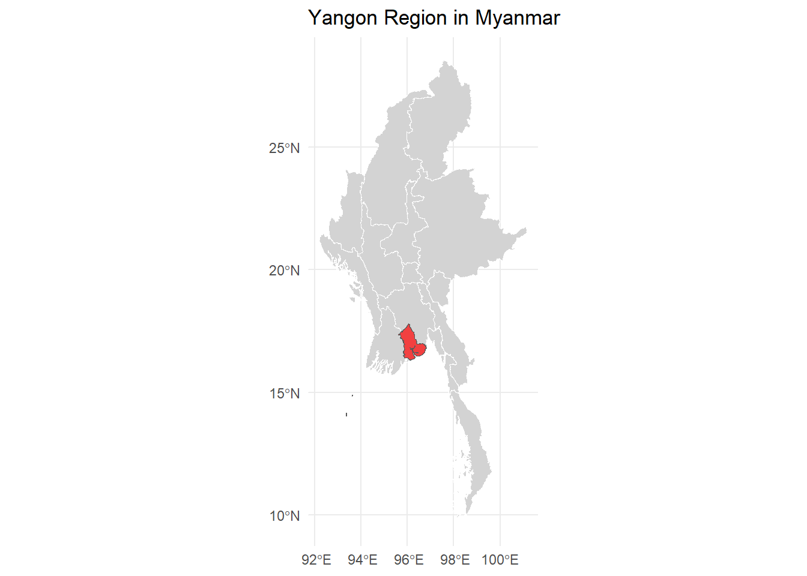
G-Function
# Filter conflict data for Yangon and jitter the coordinates
conflict_Yangon <- conflict_data %>%
st_join(Yangon) %>%
filter(!is.na(ST)) %>%
st_jitter() # Small jitter amount, adjust if needed
# Create observation window for Yangon
window_Yangon <- as.owin(st_bbox(Yangon))
# Convert jittered conflict points to ppp object
conflict_ppp_Yangon <- as.ppp(st_coordinates(conflict_Yangon), W = window_Yangon)
# Compute G-function estimation
g_est_Yangon <- Gest(conflict_ppp_Yangon, correction = "border")
# Plot the G-function
plot(g_est_Yangon, main = "G-function for Conflict Events in Yangon")# Print summary of G-function estimation
summary(g_est_Yangon) r theo rs
Min. :0.00000 Min. :0.0000 Min. :0.0000
1st Qu.:0.03383 1st Qu.:0.5130 1st Qu.:0.9908
Median :0.06767 Median :0.9438 Median :0.9977
Mean :0.06767 Mean :0.7383 Mean :0.9887
3rd Qu.:0.10150 3rd Qu.:0.9985 3rd Qu.:0.9988
Max. :0.13533 Max. :1.0000 Max. :0.9996 # Perform Monte Carlo test
G_Yangon_env <- envelope(conflict_ppp_Yangon, fun = Gest, nsim = 999, rank = 1, global = TRUE)Generating 999 simulations of CSR ...
1, 2, 3, ......10.........20.........30.........40.........50.........60..
.......70.........80.........90.........100.........110.........120.........130
.........140.........150.........160.........170.........180.........190........
.200.........210.........220.........230.........240.........250.........260......
...270.........280.........290.........300.........310.........320.........330....
.....340.........350.........360.........370.........380.........390.........400..
.......410.........420.........430.........440.........450.........460.........470
.........480.........490.........500.........510.........520.........530........
.540.........550.........560.........570.........580.........590.........600......
...610.........620.........630.........640.........650.........660.........670....
.....680.........690.........700.........710.........720.........730.........740..
.......750.........760.........770.........780.........790.........800.........810
.........820.........830.........840.........850.........860.........870........
.880.........890.........900.........910.........920.........930.........940......
...950.........960.........970.........980.........990........
999.
Done.# Plot the results
plot(G_Yangon_env, main = "Monte Carlo Test: G-function for Conflict Events in Yangon")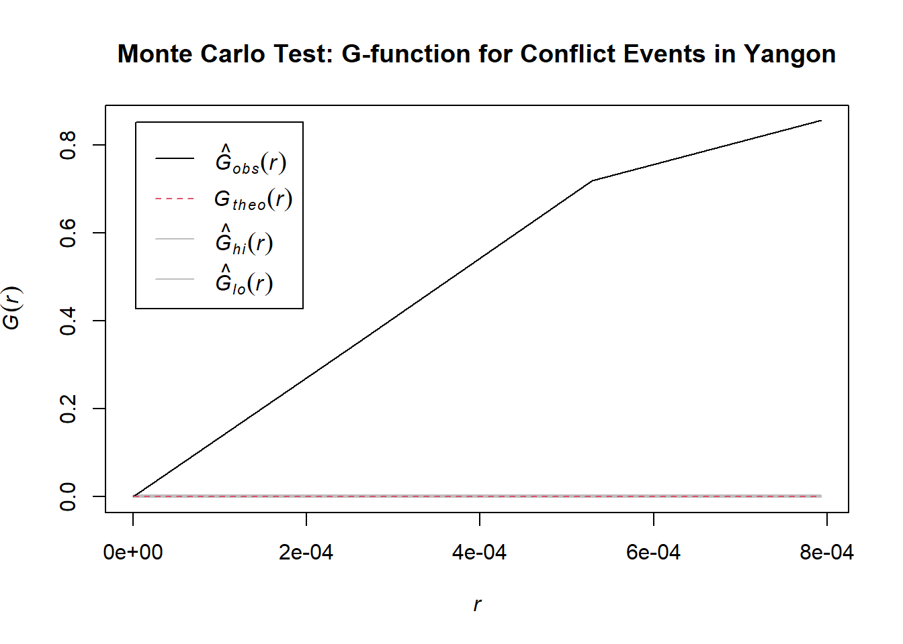
# Print the results of the test
print(G_Yangon_env)Simultaneous critical envelopes for G(r)
and observed value for 'conflict_ppp_Yangon'
Edge correction: "km"
Obtained from 999 simulations of CSR
Envelope based on maximum deviation of G(r) from null value for CSR (known
exactly)
Alternative: two.sided
Significance level of simultaneous Monte Carlo test: 1/1000 = 0.001
...........................................................
Math.label Description
r r distance argument r
obs hat(G)[obs](r) observed value of G(r) for data pattern
theo G[theo](r) theoretical value of G(r) for CSR
lo hat(G)[lo](r) lower critical boundary for G(r)
hi hat(G)[hi](r) upper critical boundary for G(r)
...........................................................
Default plot formula: .~r
where "." stands for 'obs', 'theo', 'hi', 'lo'
Columns 'lo' and 'hi' will be plotted as shading (by default)
Recommended range of argument r: [0, 0.00079296]
Available range of argument r: [0, 0.00079296]L-Function
# Calculate L-function
L_Yangon <- Lest(conflict_ppp_Yangon, correction = "Ripley")
# Plot L-function
plot(L_Yangon, . - r ~ r, main = "L-function for Conflict Events in Yangon")# Perform Monte Carlo test with L-function
L_Yangon_env <- envelope(conflict_ppp_Yangon, fun = Lest, nsim = 999, rank = 1, global = TRUE)Generating 999 simulations of CSR ...
1, 2, 3, ......10.........20.........30.........40.........50.........60..
.......70.........80.........90.........100.........110.........120.........130
.........140.........150.........160.........170.........180.........190........
.200.........210.........220.........230.........240.........250.........260......
...270.........280.........290.........300.........310.........320.........330....
.....340.........350.........360.........370.........380.........390.........400..
.......410.........420.........430.........440.........450.........460.........470
.........480.........490.........500.........510.........520.........530........
.540.........550.........560.........570.........580.........590.........600......
...610.........620.........630.........640.........650.........660.........670....
.....680.........690.........700.........710.........720.........730.........740..
.......750.........760.........770.........780.........790.........800.........810
.........820.........830.........840.........850.........860.........870........
.880.........890.........900.........910.........920.........930.........940......
...950.........960.........970.........980.........990........
999.
Done.# Plot Monte Carlo test results
plot(L_Yangon_env, . - r ~ r, main = "Monte Carlo Test: L-function for Conflict Events in Yangon")# Print the results of the test
print(L_Yangon_env)Simultaneous critical envelopes for L(r)
and observed value for 'conflict_ppp_Yangon'
Edge correction: "iso"
Obtained from 999 simulations of CSR
Envelope based on maximum deviation of L(r) from null value for CSR (known
exactly)
Alternative: two.sided
Significance level of simultaneous Monte Carlo test: 1/1000 = 0.001
...........................................................
Math.label Description
r r distance argument r
obs hat(L)[obs](r) observed value of L(r) for data pattern
theo L[theo](r) theoretical value of L(r) for CSR
lo hat(L)[lo](r) lower critical boundary for L(r)
hi hat(L)[hi](r) upper critical boundary for L(r)
...........................................................
Default plot formula: .~r
where "." stands for 'obs', 'theo', 'hi', 'lo'
Columns 'lo' and 'hi' will be plotted as shading (by default)
Recommended range of argument r: [0, 0.86867]
Available range of argument r: [0, 0.86867]L-Function over time
# Extract Yangon region
yangon <- adm1 %>%
filter(ST == "Yangon")
# Filter conflict data for Yangon and jitter the coordinates
conflict_yangon <- conflict_data %>%
st_join(yangon) %>%
filter(!is.na(ST)) %>%
st_jitter()
# Create observation window for Yangon
window_yangon <- as.owin(st_bbox(yangon))
# Function to analyze a single quarter
analyze_quarter <- function(data, quarter) {
conflict_ppp <- as.ppp(st_coordinates(data), W = window_yangon)
tryCatch({
g_est <- Gest(conflict_ppp, correction = "border")
l_est <- Lest(conflict_ppp, correction = "Ripley")
g_plot <- plot(g_est, main = paste("G-function for Yangon -", quarter))
l_plot <- plot(l_est, . - r ~ r, main = paste("L-function for Yangon -", quarter))
return(list(g_plot = g_plot, l_plot = l_plot, message = NULL))
}, error = function(e) {
print(paste("Lack of entry within the time period:", quarter))
})
}
# Perform analysis for each quarter
quarterly_results <- conflict_yangon %>%
group_by(quarter) %>%
group_map(~ analyze_quarter(.x, .y$quarter))Spatio-Temporal kernel density estimation
# Yangon Region
yangon <- adm1 %>%
filter(ST == "Yangon")
# Filter conflict data for Yangon and jitter the coordinates
conflict_yangon <- conflict_data %>%
st_join(yangon) %>%
filter(!is.na(ST)) %>%
st_jitter()
# Create observation window for Yangon
window_yangon <- as.owin(st_bbox(yangon))
# Prepare data for STKDE
coords <- st_coordinates(conflict_yangon)
t <- as.numeric(conflict_yangon$event_date - min(conflict_yangon$event_date))
# Create ppp object
ppp_yangon <- as.ppp(coords, W = window_yangon)
# Compute bandwidths
h_spatial <- bw.ppl(ppp_yangon)
h_temporal <- bw.SJ(t)
# Perform STKDE
stkde_result <- spattemp.density(ppp_yangon, t, tlim = range(t),
h = c(h_spatial, h_temporal))
# Print summary of STKDE result
print(summary(stkde_result))Spatiotemporal Kernel Density Estimate
Bandwidths
h = 0.004 (spatial)
lambda = 21.4251 (temporal)
No. of observations
2608
Spatial bound
Type: rectangle
2D enclosure: [93.35195, 96.82663] x [14.04583, 17.79696]
Temporal bound
[0, 1262]
Evaluation
128 x 128 x 1263 trivariate lattice
Density range: [0, 0.2711375]
NULLThe analysis of conflict events in Yangon reveals a complex and intensely clustered pattern of violence over approximately 3.5 years, with 2,608 recorded incidents averaging 2.07 events per day.
Both the G-function and L-function analyses consistently demonstrate significant spatial clustering far exceeding what would be expected from random distribution, with particularly strong clustering at shorter and medium distances.
Comparing the conflict dynamics in Yangon with those of the central region (Sagaing, Mandalay, and Magway) reveals both similarities and distinct characteristics, highlighting the complex nature of the conflict across different parts of Myanmar:
Conflict Intensity:
- The Central Region experiences higher overall conflict intensity.
Spatial Clustering:
Both areas exhibit strong spatial clustering of conflict events, significantly deviating from random distribution.
Yangon shows particularly intense clustering at shorter and medium distances.
The central regions display strong multi-scale clustering, but without the pronounced peak seen in Yangon.
Yangon’s conflict pattern likely reflects complex urban dynamics, with potential concentrations in specific neighborhoods or districts of Myanmar’s largest city. The central regions’ patterns suggest a mix of urban and rural conflict zones, possibly reflecting the more diverse geography of these areas.
Visualization of Conflict Density Using OpenStreetMap
Having completed our analysis using shapefiles, we now transition to a more realistic and detailed mapping approach by incorporating OpenStreetMap as the base layer for our Kernel Density Estimation (KDE) visualizations. This shift from abstract boundary representations to a comprehensive geographical context allows us to better understand the nuances of conflict distribution in Myanmar.
By overlaying our KDE results on this realistic backdrop, we can more effectively correlate conflict hotspots with actual geographical features, offering deeper insights into how the physical landscape and human geography of Myanmar influence conflict dynamics.
# Function to fetch OpenStreetMap base map
get_osm_map <- function(bbox) {
osm_map <- read_osm(bbox, type = "osm", zoom = NULL)
return(osm_map)
}
# Function to plot a single KDE layer with tmap
plot_kde_tmap <- function(kde_layer, quarter, admin_boundary, osm_map, density_range) {
# Convert raster to stars object
kde_stars <- st_as_stars(kde_layer)
# Calculate the threshold for visibility (e.g., top 20% of density values)
threshold <- quantile(kde_stars[[1]], 0.8, na.rm = TRUE)
# Set values below the threshold as NA for transparency
kde_stars[kde_stars < threshold] <- NA
# Create the tmap plot
tm_shape(osm_map) +
tm_rgb() +
tm_shape(kde_stars) +
tm_raster(palette = c("#FFCCCC", "#FF0000"),
alpha = 0.7,
title = "Density",
style = "cont",
breaks = c(threshold, density_range[2]),
midpoint = NA,
legend.reverse = TRUE) +
tm_shape(admin_boundary) +
tm_borders(col = "black", lwd = 1.5) +
tm_layout(main.title = paste("KDE for", quarter),
main.title.size = 1,
legend.outside = TRUE,
legend.outside.position = "right")
}
# Get the bounding box of Myanmar
myanmar_bbox <- st_bbox(adm0)
# Fetch OpenStreetMap base map
osm_map <- read_osm(myanmar_bbox)
# Get the density range
density_range <- get_lowest_max_density(kde_layers)
# Plot all KDE layers with fixed density scale
kde_tmaps <- lapply(seq_along(kde_layers), function(i) {
plot_kde_tmap(kde_layers[[i]], names(kde_layers)[i], adm0, osm_map, density_range)
})
# Display the plots
tmap_mode("plot") # Set tmap mode to static plotting
for (map in kde_tmaps) {
print(map)
}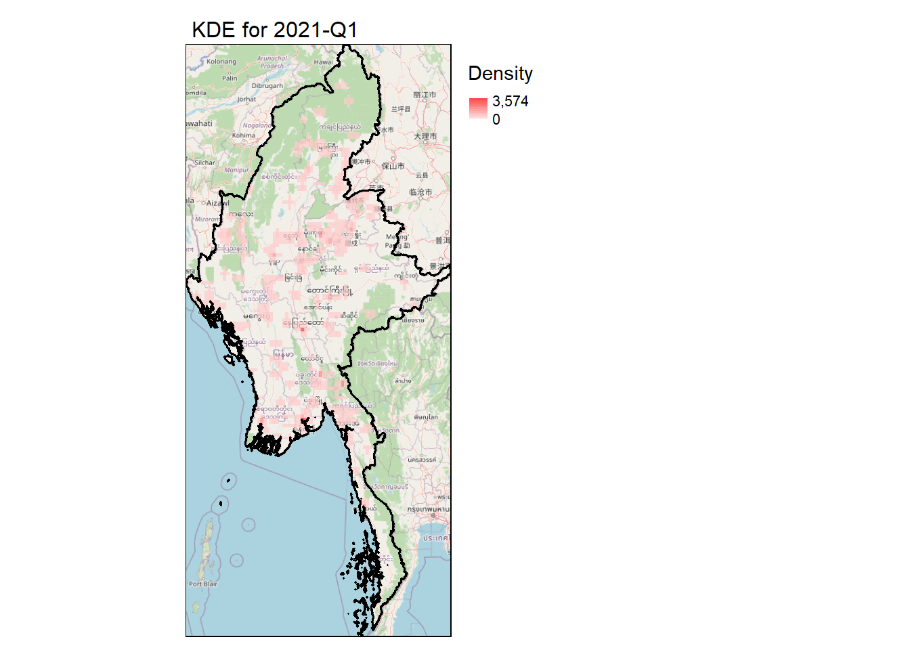
The diagrams below shows a different way of visualizing the conflict density with Open Street Map.
# Function to fetch OpenStreetMap base map
get_osm_map <- function(bbox) {
osm_map <- read_osm(bbox, type = "osm", zoom = NULL)
return(osm_map)
}
# Function to plot a single KDE layer with tmap
plot_kde_tmap <- function(kde_layer, quarter, admin_boundary, osm_map, density_range) {
# Convert raster to stars object
kde_stars <- st_as_stars(kde_layer)
# Create the tmap plot
tm_shape(osm_map) +
tm_rgb() +
tm_shape(kde_stars) +
tm_raster(palette = "viridis",
alpha = 0.7,
title = "Density",
style = "cont",
breaks = density_range) +
tm_shape(admin_boundary) +
tm_borders(col = "black", lwd = 1.5) +
tm_layout(main.title = paste("KDE for", quarter),
main.title.size = 1,
legend.outside = TRUE,
legend.outside.position = "right")
}
# Get the bounding box of Myanmar
myanmar_bbox <- st_bbox(adm0)
# Fetch OpenStreetMap base map
osm_map <- get_osm_map(myanmar_bbox)
# Get the density range
density_range <- get_lowest_max_density(kde_layers)
# Plot all KDE layers with fixed density scale
kde_tmaps <- lapply(seq_along(kde_layers), function(i) {
plot_kde_tmap(kde_layers[[i]], names(kde_layers)[i], adm0, osm_map, density_range)
})
# Display the plots
tmap_mode("plot") # Set tmap mode to static plotting
for (map in kde_tmaps) {
print(map)
}
Bonus Section : Predictive Conflict Analysis
In the pursuit of employing methods beyond those taught in class, this analysis has explored various advanced techniques and libraries in geospatial analysis. Notably, libraries such as viridis for enhanced color exploration and stars for improved raster manipulation were investigated, among others.
However, I would like to end this report by looking towards the future and take a more proactive approach: Predictive Conflict Analysis. This decision stems from the recognition that while our previous analyses have been primarily retrospective, there is significant value in exploring future developments.
Our approach thus far has primarily been retrospective, focusing on the examination and interpretation of historical conflict data in Myanmar. While this reactive analysis provides valuable insights into past trends and patterns, it leaves open the question of future developments.
By leveraging advanced time series forecasting techniques, specifically the Prophet package, we aim to project future conflict patterns in Myanmar. This shift from retrospective analysis to predictive modeling represents a significant step towards a more forward-looking approach in conflict studies and geospatial analysis.
As we delve into this predictive analysis, it’s important to note that while these forecasts offer valuable insights, they should be interpreted with caution, considering the complex and often unpredictable nature of conflict dynamics. The following analysis serves as a data-driven complement to expert knowledge and on-the-ground intelligence in understanding and anticipating conflict patterns in Myanmar.
# Prepare data for Prophet
prophet_data <- conflict_data %>%
mutate(ds = as.Date(event_date)) %>%
group_by(ds) %>%
summarise(y = n()) %>%
ungroup()
# Create and fit Prophet model
m <- prophet(yearly.seasonality = TRUE,
weekly.seasonality = TRUE,
daily.seasonality = FALSE,
seasonality.mode = 'multiplicative')
m <- fit.prophet(m, prophet_data)
# Generate forecast
future <- make_future_dataframe(m, periods = 365) # Forecast for next year
forecast <- predict(m, future)
# forecast
p <- plot(m, forecast) +
labs(title = "Overall Conflict Event Forecast for Myanmar",
x = "Date",
y = "Number of Conflict Events")
# Plot components
components_plot <- prophet_plot_components(m, forecast)# Plot Forecast
pTrend Analysis (Top Graph): This graph illustrates the overall trend of conflict events in Myanmar from 2021 to 2025. The y-axis represents the average number of daily conflict events, while the x-axis (labeled ‘ds’) shows the timeline.
The blue line depicts the trend, starting at about 10 events per day in early 2021, rapidly increasing to a peak of around 40 events per day in early 2022, followed by a gradual decline. The part of the line without any shaded area represents historical data, while the latter part (from mid 2024) is a forecast. The light blue shaded area indicates the forecast’s uncertainty, widening as it projects further into the future.
Day of Week (Weekly) Trends (Middle Graph): This graph shows the average effect of each day of the week on conflict event frequency, based on historical data. The y-axis percentage indicates how much the number of events deviates from the overall daily average.
For instance, Wednesdays show about a 5% increase in events compared to the average, while weekends (particularly Sundays) see fewer events, with approximately a 6% decrease. This pattern suggests that conflict events are more likely to occur mid-week and less likely on weekends.
Yearly Seasonality (3rd Graph): This graph illustrates the seasonal patterns of conflict events throughout the year, also derived from historical data. The y-axis shows the percentage deviation from the yearly average.
Notable peaks occur in late January/early February (about 10% increase) and November (about 20% increase), while the lowest point is in early August (about 15-20% decrease). This suggests that certain times of the year consistently see more or fewer conflict events, possibly due to factors like weather patterns, political cycles, or cultural events.
The last graph shows a more focused look into the forecast.
# Identify unique event types
event_types <- unique(conflict_data$event_type)
# Function to prepare data for a specific event type
prepare_event_type_data <- function(data, event_type) {
data %>%
filter(event_type == !!event_type) %>%
mutate(ds = as.Date(event_date)) %>%
group_by(ds) %>%
summarise(y = n()) %>%
ungroup()
}
# Function to create and fit Prophet model
create_fit_model <- function(data) {
m <- prophet(yearly.seasonality = TRUE,
weekly.seasonality = TRUE,
daily.seasonality = FALSE,
seasonality.mode = 'multiplicative')
m <- fit.prophet(m, data)
return(m)
}
# Function to generate forecast
generate_forecast <- function(model, periods = 365) {
future <- make_future_dataframe(model, periods = periods)
forecast <- predict(model, future)
return(forecast)
}
# Function to plot forecast
plot_forecast <- function(model, forecast, event_type) {
plot(model, forecast) +
labs(title = paste("Forecast for", event_type, "Events"),
x = "Date",
y = "Number of Events")
}
# Create lists to store models and forecasts
event_type_models <- list()
event_type_forecasts <- list()
# Loop through each event type
for (type in event_types) {
# Prepare data
type_data <- prepare_event_type_data(conflict_data, type)
# Create and fit model
model <- create_fit_model(type_data)
event_type_models[[type]] <- model
# Generate forecast
forecast <- generate_forecast(model)
event_type_forecasts[[type]] <- forecast
# Create and save plot
plot <- plot_forecast(model, forecast, type)
# Print plot
print(plot)
}# Analyze trends across event types
trend_comparison <- map_dfr(event_types, function(type) {
forecast <- event_type_forecasts[[type]]
forecast %>%
select(ds, trend) %>%
mutate(event_type = type)
})
# Plot trend comparison
trend_comparison_plot <- ggplot(trend_comparison, aes(x = ds, y = trend, color = event_type)) +
geom_line() +
labs(title = "Trend Comparison Across Event Types",
x = "Date",
y = "Trend",
color = "Event Type") +
theme_minimal()
# Print trend comparison plot
print(trend_comparison_plot)Forecast Analysis
The predictive analysis of conflict events in Myanmar reveals a complex and evolving situation. While the overall conflict level is projected to remain relatively stable or slightly increase, a deeper examination of specific event types uncovers significant shifts in the nature of the conflict.
Key findings:
Overall Conflict Trend: The general level of conflict is expected to persist or marginally increase, indicating ongoing instability in the region.
Divergent Event Type Trends:
- Strategic developments and violence against civilians are projected to decrease.
- Battles and explosions/remote violence are forecast to increase.
Interpretation: This pattern suggests that the conflict may be entering a new phase. The reduction in strategic developments and civilian-targeted violence, coupled with an increase in direct confrontations (battles) and remote attacks, indicates a potential intensification of military engagements between opposing forces.
Context: These projections align with recent analyses of the situation in Myanmar. As noted in a Council on Foreign Relations article, “The rest of this year is now shaping up to be critical for both the junta and the opposition forces, who have generally maintained their alliance.” This assessment supports our forecast that the conflict may be approaching a critical juncture or peak.
https://www.cfr.org/blog/will-2024-be-juntas-end-myanmar
This indicates that the coming months could be decisive in shaping the future trajectory of the conflict in Myanmar.
Conclusion: Spatio-Temporal Patterns Analysis Summary
Our comprehensive spatio-temporal analysis of conflict patterns in Myanmar has yielded several consistent and significant findings:
Concentration of Conflict in Border Zones: All analytical approaches employed in this study corroborate that the fighting is predominantly concentrated in regions that form the border zones between Junta-controlled areas and rebel-held territories. Specifically:
- The regions of Sagaing, Mandalay, and Magway represent critical border zones between Junta and rebel forces in the central and northern parts of the country.
- Yangon, in the south, is also a key part of this border zone, experiencing significant conflict due to its strategic importance and its position at the frontier between Junta and rebel-controlled areas.
Intensity of Conflict in Border Regions: These border zones - Sagaing, Mandalay, Magway, and Yangon - consistently show the highest intensity of conflict activities.
Relative Calm in Core-Controlled Areas: In contrast to these border zones, areas firmly under the control of either the Junta or rebel forces have demonstrated lower levels of conflict.
Predictive Model Insights: Our predictive modeling suggests that the conflict is approaching a critical juncture:
- A projected decrease in violence against civilians and strategic developments is anticipated.
- Conversely, an increase in battles and explosive events is forecasted, indicating a potential escalation in direct confrontations.
Indications of an Impending Decisive Clash: The shift in conflict patterns, as indicated by our predictive model, aligns with reports and analyses suggesting that both sides of the conflict are preparing for a decisive engagement. This impending climax in the conflict underscores the urgent need for conflict resolution initiatives and humanitarian preparedness.
References
- The International Institute for Strategic Studies. (n.d.). Myanmar. The International Institute for Strategic Studies. https://myanmar.iiss.org/
- Beech, H., & Wei, C. (2024, April 20). What’s Happening in Myanmar’s Civil War?. The New York Times. https://www.nytimes.com/interactive/2024/04/20/world/asia/myanmar-civil-war.html
- Special Advisory Council for Myanmar. (n.d.). Special Advisory Council for Myanmar. https://specialadvisorycouncil.org/
- United States Institute of Peace. (2022, November 10). Understanding the People’s Defense Forces in Myanmar. https://www.usip.org/publications/2022/11/understanding-peoples-defense-forces-myanmar
- Al Jazeera. (2024, January 16). What is Myanmar’s Three Brotherhood Alliance that’s resisting the military? https://www.aljazeera.com/news/2024/1/16/what-is-myanmars-three-brotherhood-alliance-thats-resisting-the-military
- Council of Foreign Relations(2024, January 13). Will 2024 be the junta’s end in Myanmar? Council on Foreign Relations. https://www.cfr.org/blog/will-2024-be-juntas-end-myanmar
- Claude AI. (n.d.). Claude AI. https://claude.ai/